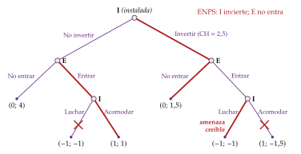
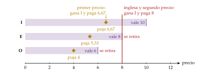
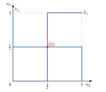
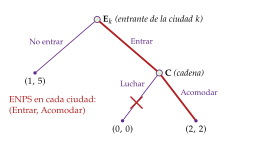
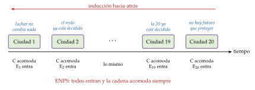
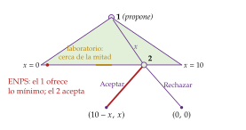
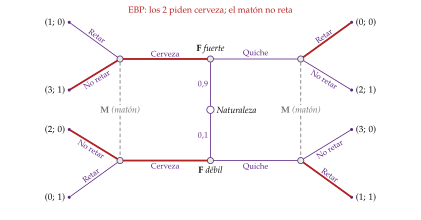
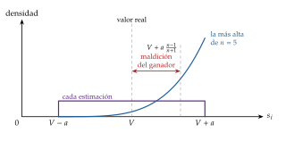
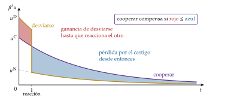

Tema 3.A.14
Teoría de juegos. Principales conceptos. Aplicaciones, con especial referencia a las subastas.
Equilibrio de Nash, juegos repetidos y tit for tat, juegos bayesianos, núcleo y Shapley, diseño de mecanismos y subastas: equivalencia, maldición del ganador.
Introducción
Enganche:
«Hoy por ti, mañana por mí», dice el refrán. ¿Por qué ayudamos sin firmar nada al vecino, al compañero o al proveedor con el que vamos a volver a tratar, y no a un desconocido al que no veremos más? No hace falta suponer que somos mejores con unos que con otros: lo que cambia es el juego. La teoría de juegos responde que lo que hace cada uno depende de la estructura del juego: si se repite o no, qué sabe cada jugador, quién mueve primero y cuáles son las reglas.
Las reglas también las escribe el Estado. En julio de 2021 subastó la banda de 700 MHz para el 5G: tras 12 rondas de pujas, adjudicó concesiones por 1.010 millones de euros (Ministerio de Asuntos Económicos y Transformación Digital, 2021a), apenas por encima del precio de salida de 995,5 millones (Ministerio de Asuntos Económicos y Transformación Digital, 2021b). Ningún funcionario sabía cuánto valía ese espectro para cada operador; el formato de la subasta les obligó a revelarlo, al menos en parte, con sus pujas.
Detrás está la pregunta de esta exposición: ¿se puede predecir lo que harán agentes racionales cuyas decisiones dependen unas de otras y que se anticipan unos a otros? ¿Y se pueden diseñar las reglas para que, jugando en su propio interés, revelen lo que saben?
Relevancia:
Teórica: la teoría de juegos es hoy el lenguaje común de la microeconomía. Lo reconocen 6 premios Nobel:1
en 1994, a Harsanyi, Nash y Selten, «por su análisis pionero de los equilibrios en la teoría de los juegos no cooperativos» (The Nobel Prize, 1994);
en 1996, a Mirrlees y Vickrey, «por sus contribuciones fundamentales a la teoría económica de los incentivos con información asimétrica» (The Nobel Prize, 1996);
en 2005, a Aumann y Schelling, «por haber mejorado nuestra comprensión del conflicto y la cooperación mediante el análisis de la teoría de juegos» (The Nobel Prize, 2005);
en 2007, a Hurwicz, Maskin y Myerson, «por haber sentado las bases de la teoría del diseño de mecanismos» (The Nobel Prize, 2007);
en 2012, a Roth y Shapley, «por la teoría de las asignaciones estables y la práctica del diseño de mercados» (The Nobel Prize, 2012), y
en 2020, a Milgrom y Wilson, «por sus mejoras de la teoría de las subastas y sus invenciones de nuevos formatos de subasta» (The Nobel Prize, 2020).
Empírica: el oligopolio [ver tema 3.A.19], la negociación salarial [ver tema 3.A.27], la entrada en los mercados [ver tema 3.A.15], las guerras comerciales [ver tema 3.B.7] y la credibilidad de los bancos centrales [ver tema 3.A.36] son juegos, y se analizan como tales.
De política económica: el Estado subasta deuda, espectro radioeléctrico, apoyo a las renovables y derechos de emisión, y persigue los cárteles que se reparten las licitaciones públicas. En todos los casos, el diseño de las reglas decide cuánto se recauda y quién se queda con el bien.
Contextualización:
Concepto. La teoría de juegos estudia las situaciones de interdependencia estratégica: aquellas en las que lo que obtiene cada agente depende de sus decisiones y de las de los demás, y cada uno lo sabe. Un juego es la representación formal de una de esas situaciones. Es una rama de las matemáticas aplicadas que sirve igual a la economía, la ciencia política, la biología o la estrategia militar. La teoría de la decisión con riesgo es el caso de un solo jugador frente a la naturaleza, que no reacciona a lo que él haga [ver tema 3.A.10].
Desde un punto de vista histórico:
Hay antecedentes en el siglo XIX: el duopolio de Cournot (1838), cuyo equilibrio es un caso particular del de Nash, y su crítica por Bertrand (1883). En 1913, Zermelo prueba que el ajedrez tiene solución (Zermelo, 1913).
La teoría nace como disciplina con el teorema minimax de von Neumann (1928) y, sobre todo, con Theory of Games and Economic Behavior de von Neumann y Morgenstern (1944), cuyo apéndice de la 2.ª edición (1947) axiomatiza la utilidad esperada [ver tema 3.A.10].
Entre 1950 y 1975 se fijan los conceptos de solución:
el equilibrio de Nash (1950a);
la negociación (Nash, 1950b);
el valor de Shapley (1953);
la perfección en subjuegos (Selten, 1965), y
los juegos con información incompleta (Harsanyi, 1967–1968).
Desde los años 70 se aplica de forma masiva: la organización industrial, la economía de la información, el comercio internacional, la política monetaria y, desde los 90, el diseño de subastas y de mercados.
Desde un punto de vista teórico, en competencia perfecta y en monopolio no hace falta: el precio-aceptante es demasiado pequeño para influir en los demás y el monopolista no tiene rivales [ver tema 3.A.16] [ver tema 3.A.17]. La teoría de juegos es necesaria cuando hay pocos agentes y cada uno influye en lo que obtienen los demás.
Problemática (preguntas clave):
¿Qué cabe predecir cuando cada uno elige pensando en lo que harán los demás? ¿Qué concepto de solución usar en cada tipo de juego?
¿Cuándo es creíble una amenaza o una promesa? ¿Cambia la predicción cuando se mueve por turnos, cuando el juego se repite o cuando alguien sabe algo que los demás no saben?
¿Cómo se reparten las ganancias de cooperar?
¿Pueden diseñarse las reglas para que los jugadores revelen su información? En particular, ¿qué formato de subasta conviene al vendedor y cuál a la sociedad? ¿Y por qué la cooperación del refrán, que tan bien funciona entre vecinos, se convierte en un problema cuando las empresas que se presentan una y otra vez a los mismos concursos públicos se turnan para ganarlos («hoy gano yo, mañana tú»)?
Estructura: la exposición se divide en 3 bloques, que siguen el orden del título: primero los principales conceptos y después sus aplicaciones.
Principales conceptos: juegos con información completa (I):
Principales conceptos: información incompleta, negociación y juegos cooperativos (II):
Aplicaciones, con especial referencia a las subastas (III):
El orden va de menos a más información privada, porque las subastas son juegos con información incompleta. El eje de la exposición es el concepto de equilibrio (tabla 1): cada paso añade un ingrediente (el tiempo, la información privada, los acuerdos vinculantes) que obliga a refinarlo, y el tercer bloque le da la vuelta a la pregunta: en lugar de predecir el resultado de un juego dado, se elige el juego que da el resultado deseado. Un mismo ejemplo acompaña a toda la exposición, el de nuestros 2 operadores de telecomunicaciones: I, un operador de telecomunicaciones ya instalado en el mercado, y E, uno que quiere entrar en él. A lo largo de la exposición:
se enfrentan en una guerra de precios;
E decide si entra e I si se resiste;
se encuentran cada mes;
E no sabe cuáles son los costes de I;
negocian y forman un consorcio con un tercer operador, y
al final, pujan por el espectro del 5G que subasta el Gobierno, donde el refrán del enganche reaparece del revés: «hoy gano yo, mañana tú».
3.A.14. Teoría de juegos y subastas
Introducción: «hoy por ti, mañana por mí»; interdependencia estratégica; de Cournot y von Neumann a Nash, Selten y Harsanyi; el ejemplo de los 2 operadores, I (instalada) y E (entrante)
I. Principales conceptos: información completa
1. Elementos, representación y clasificación (estáticos y dinámicos: secuenciales y repetidos)
2. Estáticos: dominancia; equilibrio de Nash; mixtas y existencia; minimax; coordinación
3. Dinámicos: (a) secuenciales: inducción hacia atrás, ENPS (Selten), credibilidad y compromiso;
(b) repetidos: finitos (cadena de tiendas) e infinitos (gatillo, tradición oral)
II. Principales conceptos: información incompleta, negociación y cooperativos
1. Bayesianos (Harsanyi): equilibrio bayesiano de Nash
2. Dinámicos: equilibrio bayesiano perfecto; señalización; criterio intuitivo
3. Negociación (Nash, Rubinstein) y cooperativos: núcleo; valor de Shapley
III. Aplicaciones, con especial referencia a las subastas
1. Aplicaciones en economía
2. Diseño de mecanismos: principio de revelación; límites
3. Subastas: formatos; 2.º y 1.º precio; equivalencia; óptima; valor común; multiunidad; España; colusión
Conclusión
Reparto del cante: introducción, 2′30″; I, 9′ (I.1, 1′30″; I.2, 3′30″; I.3, 4′: secuenciales, 2′, y repetidos, 2′); II, 7′30″ (II.1, 2′; II.2, 2′; II.3, 3′30″); III, 10′ (III.1, 1′30″; III.2, 2′; III.3, 6′30″), y conclusión, 1′.
La pizarra, en 3 zonas fijas durante todo el cante. A la izquierda, la tabla de clasificación de los juegos (tabla 1): se dibuja vacía en la clasificación (I.1) y cada apartado escribe en su casilla el concepto de solución, con el refrán que lo resume al lado; en el bloque III, ya completa, la sustituye la tabla de los formatos de subasta (tabla 7). En el centro, las matrices y los árboles pequeños del ejemplo de I y E, que se borran al acabar cada apartado. A la derecha, lo que se queda hasta el final: la definición del equilibrio de Nash (1), la condición del gatillo (2), la solución de negociación de Nash (3) y, en el bloque III, la puja de primer precio (5).
El ejemplo de los 2 operadores: cada concepto se presenta primero con el ejemplo de I y E (las viñetas sangradas que lo retoman, «Siguiendo con el ejemplo de nuestros 2 operadores…», «Volvamos a I y E…»), paso a paso, con pagos sencillos y sin funciones de demanda; después se nombra en una frase el ejemplo clásico que lo ilustra (las que empiezan por «Clásico»), que se desarrolla en el anexo E y sirve de gancho para las preguntas del tribunal.
Los refranes se dicen una vez, al presentar su concepto, y se apuntan junto a su casilla de la tabla: «Perro ladrador, poco mordedor» y «Quemar las naves», junto al ENPS; «Hoy por ti, mañana por mí», junto a los juegos repetidos; «Cuando el río suena, agua lleva», junto al EBP; «No es oro todo lo que reluce», junto al valor común, y «Hoy gano yo, mañana tú», junto al gatillo cuando vuelve con la colusión en las subastas.
El tribunal pregunta en el test sobre todo dominancia, equilibrio de Nash en matrices y estrategias mixtas: el anexo A recoge cómo se calculan. Las derivaciones de las subastas están en el anexo D.
I. Principales conceptos (I): juegos con información completa
En el cante (9′), con la pizarra en sus 3 zonas:
Elementos y clasificación (1′30″): los 4 elementos de un juego, de palabra, presentando a I y E; a la izquierda, la tabla de clasificación vacía, con las columnas «estáticos» y «dinámicos» (esta, partida en «secuenciales» y «repetidos») y las filas «información completa», «información incompleta» y «cooperativos».
Juegos estáticos (3′30″): en el centro, arriba, la matriz de la guerra de precios (tabla 2), subrayando las mejores respuestas y sombreando el equilibrio (1′); a la derecha, la definición del EN (1), que se recuadra; en la tabla, «EN» en su casilla. La existencia en mixtas (con la campaña de I y E), el minimax y la coordinación, de palabra, con su clásico en una frase cada uno (prisionero, pares o nones, batalla de los sexos, gallina).
Juegos secuenciales (2′): en el centro, abajo, el árbol de entrada (gráfico 1) con la cruz en «Luchar»; «ENPS» en la tabla y, a su lado, «Perro ladrador, poco mordedor»; el compromiso, añadiendo de palabra la rama «Invertir» (gráfico 2 como apoyo), y «Quemar las naves» bajo el refrán anterior.
Juegos repetidos (2′): se borra el árbol y se queda la matriz; a la derecha, la condición del gatillo (2), calculando \(\beta\geq1/5\) con los pagos de la matriz; «Hoy por ti, mañana por mí» en la columna de los repetidos. La paradoja de la cadena de tiendas, la tabla de estrategias (tabla 4) y el teorema de tradición oral, de palabra.
Son de profundización el juego sin estrategias dominadas, el recuadro sobre los nombres «estático» y «dinámico», el ciempiés, los refinamientos de la reputación y las notas al pie.
Empezamos por los juegos en los que todos conocen los pagos de todos. Conclusión anticipada: con información completa, el equilibrio de Nash es el concepto central de solución; existe siempre en los juegos finitos, pero puede ser ineficiente (dilema del prisionero), múltiple o apoyarse en amenazas no creíbles. La perfección en subjuegos lo afina en los juegos dinámicos, y la repetición permite sostener la cooperación sin contratos.
I.1. Elementos, representación y clasificación de los juegos
Elementos. Un juego queda descrito por 4 elementos (Mas-Colell, Whinston y Green, 1995, cap. 7), que ilustramos ya con el ejemplo que nos acompañará en toda la exposición:
los jugadores, \(i\in N=\{1,\dots,n\}\);
en nuestro ejemplo, 2 operadores de telecomunicaciones: I, el que ya está instalado en el mercado, y E, el que quiere entrar en él;
las reglas: quién mueve, cuándo, qué sabe cuando mueve y qué puede hacer (sus acciones);
por ejemplo, si I y E fijan sus precios a la vez o uno después del otro, y si E sabe o no cuánto le cuesta a I ampliar su red;
los resultados de cada combinación de acciones, y
por ejemplo, cuántos clientes se queda cada operador si los 2 mantienen el precio alto o si uno de ellos lo baja;
los pagos, \(u_i\): la utilidad que cada jugador obtiene de cada resultado. Cuando el resultado es aleatorio, el pago es la utilidad esperada, \(U_i=\mathbb{E}[u_i]\), en el sentido de von Neumann y Morgenstern [ver tema 3.A.10].
En el ejemplo, los pagos son los beneficios de cada operador, en unidades sencillas (5, 6, 1…), sin funciones de demanda ni de costes: el ejemplo sirve para ilustrar los conceptos, no para describir un mercado concreto; el oligopolio se estudia aparte [ver tema 3.A.19].
Estrategia. Una estrategia \(s_i\in S_i\) es un plan completo de acción: dice qué hará el jugador en cada situación en la que le pueda tocar mover, incluso en las que no se lleguen a dar. No es lo mismo que una acción: en un juego por turnos, la estrategia del que mueve segundo dice qué hará ante cada jugada posible del primero. Un perfil de estrategias \(s=(s_1,\dots,s_n)=(s_i,s_{-i})\) reúne una estrategia de cada jugador, donde \(s_{-i}\) son las de los demás. Las estrategias pueden ser puras (elegir con certeza) o mixtas (elegir al azar con unas probabilidades).
Racionalidad y conocimiento común. Cada jugador maximiza su pago (esperado), y la estructura del juego y la racionalidad de los jugadores son conocimiento común: todos las conocen, todos saben que todos las conocen, y así sucesivamente (Aumann, 1976).
Representaciones:
la forma extensiva (árbol del juego, gráfico 1): cada nodo de decisión es un momento en que mueve un jugador; cada rama, una acción; en los nodos terminales se escriben los pagos. Un conjunto de información agrupa los nodos de un jugador que este no puede distinguir cuando le toca mover; se dibuja uniéndolos con una línea discontinua;
la forma normal o estratégica (matriz de pagos, tabla 2): da, para cada jugador, sus estrategias y el pago de cada perfil. Cada forma extensiva tiene una única forma normal, pero no al revés: la forma normal pierde el orden de las jugadas, que es justo lo que importa en los juegos dinámicos.
Clasificación (tabla 1):
no cooperativos frente a cooperativos, según se puedan firmar o no acuerdos vinculantes;2
estáticos o simultáneos, en los que cada jugador elige una sola vez y sin observar lo que han elegido los demás, frente a dinámicos, todos aquellos en los que el tiempo importa porque alguien mueve después de observar jugadas anteriores. Es la nomenclatura de los manuales de teoría de juegos (Gibbons, 1992, cap. 2; Mas-Colell, Whinston y Green, 1995, caps. 7-9; Fudenberg y Tirole, 1991, caps. 3-5); parte de la organización industrial usa otra (recuadro gris de I.3.1). Dentro de los dinámicos hay 2 clases:
los secuenciales, que se juegan una sola vez pero por turnos, y
los repetidos, en los que un mismo juego, el juego de etapa, se juega un número finito o infinito de veces;
con información perfecta, si cada jugador, cuando le toca mover, conoce todas las jugadas anteriores (todos sus conjuntos de información tienen un solo nodo), o imperfecta si no. Un juego simultáneo es de información imperfecta: el que mueve «segundo» no ve lo que hizo el primero;
con información completa, si los pagos de todos son conocimiento común, o incompleta, si algún jugador no conoce los pagos (el tipo) de otro (II). Son 2 cosas distintas: la información completa se refiere a los pagos, y la perfecta, a las jugadas; el dilema del prisionero tiene información completa e imperfecta. Harsanyi (1967–1968) convierte la información incompleta en imperfecta (II.1). En la economía de la información, la selección adversa se modeliza como información incompleta y el riesgo moral como imperfecta [ver tema 3.A.13], y
de suma cero (lo que gana uno lo pierde otro) o de suma variable.
Un concepto de solución para cada tipo de juego: cada combinación de tiempo e información tiene su concepto de solución, y cada uno refina al anterior: todo ENPS es un EN, y todo EBP es un EBN. Las subastas (III.3) son juegos bayesianos.
| Estáticos (simultáneos) | Dinámicos (secuenciales y repetidos) |
|
|---|---|---|
| Información completa | equilibrio de Nash (EN) (I.2) |
equilibrio de Nash perfecto en subjuegos (ENPS) (I.3) |
| Información incompleta | equilibrio bayesiano de Nash (EBN) (II.1) |
equilibrio bayesiano perfecto (EBP) (II.2) |
| Cooperativos | solución de negociación de Nash, núcleo y valor de Shapley (II.3) | |
Fuente: elaboración propia a partir de Gibbons (1992, prefacio y cap. 4) y Mas-Colell, Whinston y Green (1995, caps. 7-9).
I.2. Juegos estáticos: dominancia y equilibrio de Nash
Una vez descritos los elementos de un juego, pasamos a predecir cómo se juega cuando todos eligen a la vez. Empezamos por la predicción que menos exige a los jugadores, la dominancia, y pasamos al concepto central, el equilibrio de Nash.
I.2.1. Dominancia y dilema del prisionero
Idea: la predicción más sólida es la que solo exige que cada jugador sea racional: no elegir nunca algo que es peor pase lo que pase.
Definiciones (Mas-Colell, Whinston y Green, 1995, cap. 8):
\(s_i\) es una estrategia estrictamente dominante si da al jugador más que cualquier otra, hagan lo que hagan los demás: \(u_i(s_i,s_{-i})>u_i(s_i',s_{-i})\) para toda \(s_i'\neq s_i\) y toda \(s_{-i}\in S_{-i}\);
\(s_i'\) está estrictamente dominada por \(s_i\) si \(u_i(s_i,s_{-i})>u_i(s_i',s_{-i})\) para toda \(s_{-i}\), y débilmente dominada si \(u_i(s_i,s_{-i})\geq u_i(s_i',s_{-i})\) para toda \(s_{-i}\), con desigualdad estricta para alguna.
Dilema del prisionero: cuando cada jugador tiene una estrategia estrictamente dominante, la predicción es clara, pero puede ser mala para todos.
Siguiendo con el ejemplo de nuestros 2 operadores, I (el instalado) y E (el que quiere entrar), supongamos que ya compiten y libran una guerra de precios (tabla 2, con I en las filas y E en las columnas):
cada uno decide, a la vez y sin ver lo que hace el otro, si mantiene un precio alto o lo baja;
si los 2 mantienen el precio alto, ganan 5 cada uno;
si uno lo baja y el otro no, el que lo baja se queda con los clientes del otro y gana 6, y el otro, 0, y
si los 2 lo bajan, ganan 1 cada uno.
Pongámonos en el lugar de I. Haga lo que haga E, le conviene bajar el precio:
si E mantiene el precio alto, bajándolo I gana 6 en lugar de 5;
si E lo baja, bajándolo también I gana 1 en lugar de 0.
Lo mismo le ocurre a E: bajar el precio es estrictamente dominante para los 2. Resultado: los 2 bajan el precio y ganan 1, cuando manteniéndolo alto habrían ganado 5. La racionalidad individual lleva a un resultado colectivamente ineficiente en el sentido de Pareto.
Tiene la estructura del dilema del prisionero, la del cártel [ver tema 3.A.19], del polizón en los bienes públicos [ver tema 3.A.23], de las guerras arancelarias [ver tema 3.B.7] y de los programas de clemencia [ver tema 4.A.15].
Clásico: el dilema del prisionero (Tucker, 1950). 2 detenidos, incomunicados, pueden callar o confesar; confesar es dominante y los 2 acaban con más años de cárcel que si hubieran callado (anexo E).
Eliminación iterativa de estrategias estrictamente dominadas. Si la racionalidad es conocimiento común, se pueden ir eliminando las estrategias dominadas de cada jugador y, en el juego reducido, las que pasen a estarlo. El orden en que se eliminen no altera el resultado, pero cada ronda exige un nivel más de conocimiento común. Con estrategias débilmente dominadas el orden sí importa.
Valoración: pocas veces existe una estrategia dominante, y la eliminación iterativa suele dejar muchas estrategias sin descartar (en el juego de la tabla 3 no elimina ninguna). Hace falta un concepto más fuerte.
| Precio alto | Precio bajo | |
| Precio alto | \((5,5)\) | \((0,\underline{6})\) |
| Precio bajo | \((\underline{6},0)\) | \((\underline{1},\underline{1})\) |
Fuente: elaboración propia a partir de Tucker (1950) y Gibbons (1992, cap. 1). Subrayadas, las mejores respuestas; sombreado, el equilibrio.
I.2.2. Equilibrio de Nash
a) Idea
En lugar de pedir que cada estrategia sea la mejor pase lo que pase, pedimos que sea la mejor frente a lo que de hecho hacen los demás. Un perfil en el que nadie quiere cambiar de estrategia por su cuenta es estable: es un acuerdo que se cumple solo.
b) Modelo
i) Supuestos
Un juego estático con información completa: jugadores \(i\in N\), estrategias \(s_i\in S_i\) y pagos \(u_i(s_i,s_{-i})\) que son conocimiento común; jugadores racionales que eligen a la vez.
ii) Desarrollo
Mejor respuesta: la mejor respuesta de \(i\) a las estrategias de los demás es la estrategia (o el conjunto de estrategias) que maximiza su pago, \(R_i(s_{-i})=\arg\max_{s_i\in S_i}u_i(s_i,s_{-i})\). Con acciones continuas es la función de reacción del oligopolio [ver tema 3.A.19].
Volvamos a la guerra de precios de I y E: si E mantiene el precio alto, la mejor respuesta de I es bajarlo (6 frente a 5); si E lo baja, también (1 frente a 0). Lo mismo vale para E. Por eso en la tabla 2 están subrayados el 6 de cada uno y los 2 unos de (Bajo, Bajo).
Definición (Nash, 1950a). Un perfil \(s^*=(s_1^*,\dots,s_n^*)\) es un equilibrio de Nash (EN) si la estrategia de cada jugador es una mejor respuesta a las de los demás:
\[u_i\big(s_i^*,s_{-i}^*\big)\;\geq\;u_i\big(s_i,s_{-i}^*\big)\quad\forall\,s_i\in S_i,\ \forall\,i\in N\qquad\Longleftrightarrow\qquad s_i^*\in R_i\big(s_{-i}^*\big)\ \ \forall\,i\tag{1}\]
La desigualdad es débil: basta con que nadie gane desviándose; puede haber otra estrategia igual de buena.
Interpretación: un EN es un perfil de expectativas que se confirman: si cada uno cree que los demás jugarán \(s_{-i}^*\), le conviene jugar \(s_i^*\), y así lo confirma. Todo EN sobrevive a la eliminación iterativa de estrategias estrictamente dominadas, pero no al revés: el EN es más exigente. Si cada jugador tiene una estrategia estrictamente dominante, ese perfil es el único EN.
Cómo se halla (anexo A): en cada columna se subraya el mejor pago del jugador de las filas y en cada fila el mejor del de las columnas; las casillas con los 2 pagos subrayados son EN. En la guerra de precios, el único EN es (Bajo, Bajo); en la tabla 3, (Abajo, Derecha), aunque ninguna estrategia está dominada.
Estrategias mixtas. Una estrategia mixta \(\vec{\pi}_i\in\Delta(S_i)\) es una distribución de probabilidad sobre las estrategias puras del jugador; en un juego \(2\times2\) basta con \(\pi_i\), la probabilidad con que \(i\) juega su primera estrategia. Los pagos son entonces utilidades esperadas, \(U_i=\mathbb{E}[u_i]\) [ver tema 3.A.10], y el EN se define igual, con \(\vec{\pi}\) en lugar de \(s\).
Propiedad clave: en un EN en mixtas, cada jugador está indiferente entre las estrategias puras que mezcla (si una diera más, pondría en ella toda la probabilidad). Por eso las probabilidades de un jugador se fijan para dejar indiferente al otro, y dependen de los pagos del otro, no de los suyos (ejemplo resuelto, el juego de la inspección, en el anexo A).
Existencia (Nash, 1950a): todo juego con un número finito de jugadores y de estrategias puras tiene al menos un equilibrio de Nash en estrategias mixtas. La prueba aplica el teorema del punto fijo de Kakutani (1941) a la correspondencia de mejores respuestas: un EN es un perfil que es mejor respuesta de sí mismo, como el equilibrio walrasiano es un vector de precios que el ajuste deja donde está [ver tema 3.A.21].3
Un ejemplo con nuestros 2 operadores muestra por qué hacen falta las mixtas. I y E lanzan a la vez una campaña comercial, en el norte o en el sur:
I quiere coincidir con E, para neutralizar su campaña;
E quiere evitarlo, para llegar a clientes a los que I no se está dirigiendo.
Ninguna de las 4 combinaciones es un EN en estrategias puras:
si coinciden (los 2 en el norte o los 2 en el sur), a E le conviene cambiar de zona;
si no coinciden, a I le conviene irse a la zona de E.
Sí hay un EN en mixtas. Si los pagos son simétricos, cada uno echa a suertes la zona, al 50 %: si E eligiera el norte con más probabilidad, I iría siempre al norte y E saldría perdiendo; solo al 50 % deja a I indiferente y sin nada que aprovechar. Aquí, ser impredecible es la estrategia.
Clásico: pares o nones y el juego de la inspección: sin EN en puras, se gana siendo impredecible; en la inspección, si vigilar se encarece, la empresa no vigila menos, sino que el trabajador se escaquea más (anexos A y E).
| Izquierda | Centro | Derecha | |
| Arriba | \((0,\underline{4})\) | \((\underline{4},0)\) | \((5,3)\) |
| Medio | \((\underline{4},0)\) | \((0,\underline{4})\) | \((5,3)\) |
| Abajo | \((3,5)\) | \((3,5)\) | \((\underline{6},\underline{6})\) |
Fuente: elaboración propia a partir de Gibbons (1992, cap. 1). Subrayadas, las mejores respuestas; sombreado, el equilibrio.
iii) Implicaciones
El EN es la predicción mínima de un juego: si la teoría da una predicción que todos los jugadores conocen, tiene que ser un EN, porque si no alguien se desviaría.
Como existe siempre en mixtas, sirve de concepto de solución para cualquier juego finito, y es la base de todos los refinamientos que siguen (tabla 1).
Acciones continuas: si cada jugador elige una variable continua, el EN está donde se cortan las funciones de reacción. Es el equilibrio de Cournot (1838), que anticipa en más de un siglo el concepto de Nash; con precios y producto homogéneo, el de Bertrand, con precio igual al coste marginal [ver tema 3.A.19].
c) Extensiones: juegos de suma cero y teorema minimax
En un juego finito de 2 jugadores y suma cero, cada uno puede garantizarse lo mismo (von Neumann, 1928): lo máximo que el jugador 1 puede asegurarse contra el peor caso es igual a lo mínimo a lo que el 2 puede limitarle, \[\max_{\vec{\pi}_1}\,\min_{\vec{\pi}_2}\,U_1\big(\vec{\pi}_1,\vec{\pi}_2\big)\;=\;\min_{\vec{\pi}_2}\,\max_{\vec{\pi}_1}\,U_1\big(\vec{\pi}_1,\vec{\pi}_2\big),\] y ese valor del juego es el pago de equilibrio: en suma cero, las estrategias minimax forman un EN. En pares y nones (o en la campaña comercial de I y E, si lo que gana uno lo pierde el otro) cada jugador mezcla al 50 % y el valor es 0.
Fue el primer gran resultado de la teoría y el centro de von Neumann y Morgenstern (1944). No hay que confundirlo con los criterios de decisión frente a la naturaleza (maximin de Wald, Laplace), que no tienen interdependencia estratégica [ver tema 3.A.10]. En los juegos de suma variable la cautela del maximin deja de ser razonable y se necesita el equilibrio de Nash.
d) Evidencia empírica
Los penaltis del fútbol son un juego de suma cero en mixtas: el lanzador elige lado y el portero se lanza a la vez. Con más de 1.400 penaltis de ligas profesionales, Palacios-Huerta (2003) encuentra que los jugadores igualan la probabilidad de marcar por cada lado y no siguen patrones predecibles, como predice el minimax: con experiencia y mucho en juego, el EN en mixtas predice bien.
e) Valoración
El EN tiene 4 limitaciones:
puede no existir en estrategias puras (pares y nones, la inspección, la campaña de I y E), aunque existe siempre en mixtas en los juegos finitos;
puede haber varios, y la teoría no dice cuál se jugará. En los juegos de coordinación la respuesta la dan a menudo los puntos focales de Schelling (1960): el resultado que destaca por la costumbre o la cultura (2 amigos que han quedado en Madrid sin decir dónde van a la Puerta del Sol).
Volvamos a I y E, ahora como socios: para que sus redes se conecten tienen que adoptar el mismo estándar técnico, pero cada uno prefiere el suyo.
Si cada uno se queda con el suyo, las redes no se conectan y pierden los 2.
Hay 2 EN, uno con el estándar de I y otro con el de E: una vez elegido uno, a ninguno le conviene cambiar. Ninguno de los 2 es mejor para ambos, y la teoría no dice cuál saldrá.
Es el esquema de la batalla de los sexos (Luce y Raiffa, 1957) (anexo E).
Si, en cambio, cada uno amenaza al otro con una guerra de precios que arruinaría a ambos, los 2 quieren que ceda el otro:
si I se mantiene firme, a E le conviene ceder, y al revés; si los 2 se mantienen firmes, llega la guerra y pierden los 2;
hay 2 EN, uno en el que cede I y otro en el que cede E, y gana quien logra mostrarse más decidido;
es el juego de la gallina, con el que puede leerse el pulso entre España y el BCE de 2012 (Mecanismo Europeo de Estabilidad, 2026) (anexo E).
no tiene por qué ser eficiente en el sentido de Pareto: puede haber otro perfil que mejore a todos (la guerra de precios);
en los juegos dinámicos puede apoyarse en amenazas no creíbles, que es lo que corrige el apartado siguiente (I.3).
I.3. Juegos dinámicos: juegos secuenciales y juegos repetidos
Una vez estudiados los juegos en los que todos eligen a la vez y una sola vez, pasamos a los dinámicos, en los que el tiempo importa. Son de 2 clases:
los secuenciales, en los que se mueve por turnos (E decide si entra e I responde). En ellos aparece un problema nuevo, la credibilidad: un EN puede apoyarse en una amenaza que el jugador no cumpliría si llegara el momento;
los repetidos, en los que el mismo juego se juega muchas veces (I y E se encuentran cada mes). En ellos aparece una oportunidad nueva: la amenaza de castigar mañana puede sostener la cooperación hoy.
Conclusión anticipada: el concepto de solución es el mismo para los 2, el ENPS, que exige que las estrategias sean óptimas en cualquier punto del juego.
I.3.1. Juegos secuenciales: inducción hacia atrás, perfección en subjuegos y compromiso
a) Idea
En los juegos por turnos aparece un problema nuevo: un EN puede apoyarse en una amenaza que nadie cumpliría llegado el momento.
Siguiendo con nuestros 2 operadores, supongamos ahora que E todavía no está en el mercado (gráfico 1; pagos de E y de I, por este orden). El juego tiene 2 turnos:
primero, E decide si entra en el mercado de I; si no entra, gana 0 e I, que sigue solo, 4;
si E entra, I decide si acomoda (comparte el mercado y ganan 1 cada uno) o lucha con una guerra de precios (pierden los 2: \(-1\) cada uno).
I amenaza: «si entras, lucharé». En forma normal hay 2 EN:
(Entrar, Acomodar): E entra e I acomoda, y
(No entrar, Luchar si entra): E se cree la amenaza y no entra; como no entra, a I no le cuesta nada amenazar.
El segundo descansa en una amenaza no creíble: si E entrara de verdad, a I le convendría acomodar (\(1>-1\)), no luchar. «Perro ladrador, poco mordedor»: E sabe que I ladra, pero no muerde.
Necesitamos un concepto que descarte esos equilibrios.

Fuente: elaboración propia a partir de Mas-Colell, Whinston y Green (1995, cap. 9). I es la instalada y E, la entrante. Pagos: (E, I); en rojo, el ENPS.
b) Modelo
i) Supuestos
Un juego dinámico con información completa y finito: los jugadores mueven por turnos, observan las jugadas anteriores (al menos en algunas etapas) y conocen los pagos de todos.
ii) Desarrollo
Inducción hacia atrás: es un procedimiento, no un tipo de equilibrio, en 3 pasos:
se resuelve primero la última decisión;
se sustituye el subárbol por su resultado, y
se repite hacia la raíz.
Todo juego finito de información perfecta tiene así un equilibrio en estrategias puras, único si nadie tiene 2 pagos iguales (Zermelo, 1913; Kuhn, 1953).
Volvamos al juego de entrada de I y E y resolvámoslo desde el final:
último turno: si E ha entrado, I compara luchar (\(-1\)) con acomodar (1) y acomoda; se tacha «Luchar»;
turno anterior: E anticipa que I acomodará, así que entrar le da 1 y quedarse fuera, 0: entra.
El resultado es (Entrar, Acomodar): la amenaza de I no cuenta, porque E sabe que no la cumpliría.
Subjuego: la parte del árbol que empieza en un nodo cuyo conjunto de información tiene ese solo nodo y que incluye todos sus sucesores sin cortar ningún conjunto de información.
En el juego de entrada de I y E, lo que empieza cuando E ya ha entrado e I tiene que decidir es un subjuego: I sabe en qué nodo está (ha visto entrar a E) y todo lo que sigue cuelga de él. El juego completo es el otro subjuego.
Definición (Selten, 1965). Un perfil es un equilibrio de Nash perfecto en subjuegos (ENPS) si induce un EN en todo subjuego, también en los que no se alcanzan en equilibrio. Formaliza la racionalidad secuencial: la estrategia debe ser óptima desde cualquier punto del juego en adelante.
En juegos finitos de información perfecta, ENPS e inducción hacia atrás coinciden. Si en alguna etapa se juega a la vez, se halla el EN de los subjuegos finales, se sustituyen por sus pagos y se sigue hacia atrás (ejemplo en el anexo A).
En la entrada de E, el único ENPS es (Entrar, Acomodar): (No entrar, Luchar si entra) no lo es, porque en el subjuego que empieza tras la entrada luchar no es la mejor respuesta de I. El ENPS es un refinamiento del EN.
iii) Implicaciones: compromiso y amenazas creíbles
Como la credibilidad se juzga hacia atrás, a un jugador puede convenirle reducir sus propias opciones (Schelling, 1960).
Volvamos a la entrada de E con una novedad (gráfico 2): antes de que E decida, I puede comprar una gran capacidad, con un coste hundido de 2,5 que ya no recuperará.
Si I ha invertido y E entra, su cálculo cambia: acomodando, deja la capacidad ociosa y gana \(1-2{,}5=-1{,}5\); luchando, la aprovecha para inundar el mercado y gana \(-1\). Ahora lucharía, de verdad.
E, que lo anticipa, no entra, e I gana \(4-2{,}5=1{,}5\).
Sin invertir, I ganaría 1 (E entra e I acomoda). Como \(1{,}5>1\), invertir forma parte del ENPS: la amenaza se ha vuelto creíble porque I se ha atado las manos (A. M. Spence, 1977; Dixit, 1980) [ver tema 3.A.15].
Clásico: quemar las naves. Hernán Cortés hundió sus barcos en 1519 para que nadie pudiera retirarse (anexo E). «Quemar las naves»: quien elimina su opción de retirada convence a los demás de que luchará.
En economía:
el monopolista de un bien duradero querría comprometerse a no bajar el precio y no puede: los compradores lo anticipan y esperan, y el precio cae hacia el coste marginal; es la conjetura de Coase (1972), un problema de inconsistencia temporal [ver tema 3.A.17];
el banco central que promete inflación baja tiene, una vez fijadas las expectativas, incentivos a incumplir: es la inconsistencia temporal de Kydland y Prescott (1977) y Barro y Gordon (1983), en la que la discreción es el EN del juego entre la autoridad y el público, y que se resuelve con reglas, reputación o independencia [ver tema 3.A.36].

Fuente: elaboración propia a partir de Schelling (1960) y Tirole (1988, cap. 8). Pagos: (E, I), con un coste hundido de la capacidad de 2,5; en rojo, el ENPS.
c) Extensiones
Juegos en 2 etapas, que se resuelven por inducción hacia atrás, empezando por el equilibrio de la segunda etapa [ver tema 3.A.18] [ver tema 3.A.19]:
primero se elige la localización, la capacidad o la calidad;
después se compite en precios o cantidades.
El liderazgo de Stackelberg es el ENPS de un duopolio de Cournot jugado por turnos.
Negociación: el juego de ofertas alternadas de Rubinstein es un juego dinámico que se resuelve por inducción hacia atrás (II.3.1).
Otra forma de verlo: los juegos secuenciales como estáticos con variación conjetural. En parte de la literatura de organización industrial, y en muchos temarios de la oposición, se llama «análisis estático» a todo lo que ocurre una sola vez, incluidos el liderazgo de Stackelberg y el liderazgo en precios, y «dinámico» solo a la repetición [ver tema 3.A.19].
Justificación. Una variación conjetural es lo que una empresa cree que la otra cambiará su decisión cuando ella cambia la suya, \(v_1\equiv dq_2/dq_1\) (Bowley, 1924). La líder de Stackelberg maximiza su beneficio \(B_1(q_1,q_2)\) sabiendo que la seguidora responderá con su función de reacción, \(q_2=R_2(q_1)\), de modo que su condición de primer orden es \[\frac{\partial B_1}{\partial q_1}+\frac{\partial B_1}{\partial q_2}\,R_2'(q_1)=0,\] que es la de una empresa que maximiza en un juego de una sola etapa con una variación conjetural no nula, igual a la pendiente de la función de reacción de la seguidora, \(v_1=R_2'\). El juego secuencial puede resolverse así como uno estático con esa conjetura.
Límite. En un juego simultáneo de una sola vez nadie puede reaccionar, así que una conjetura distinta de cero no es coherente con el propio modelo (Tirole, 1988, cap. 5). El ENPS existe precisamente porque importa el orden de las jugadas: por eso esta exposición sigue a los manuales de teoría de juegos.
Si pregunta el tribunal. Es una cuestión de nombres. Los manuales de teoría de juegos llaman dinámico a todo juego con tiempo; en organización industrial a veces se reserva el nombre para la repetición. Lo importante es distinguir el orden de las jugadas (simultáneo o secuencial) y el número de encuentros (una vez o repetido).
d) Evidencia empírica
La inducción hacia atrás exige mucha racionalidad. En el juego del ciempiés de Rosenthal (1981), 2 jugadores se pasan el turno y el bote crece en cada paso; el único ENPS es parar en la primera jugada, pero en el laboratorio casi nadie para al principio (McKelvey y Palfrey, 1992). En el juego del ultimátum, muchos rechazan ofertas positivas que juzgan injustas (II.3.1).
e) Valoración
El ENPS descarta las amenazas no creíbles, pero solo funciona bien con información perfecta: si el que mueve después no sabe en qué nodo está, apenas hay subjuegos propios y el refinamiento no tiene fuerza. Para eso hacen falta las creencias del equilibrio bayesiano perfecto (II.2).
I.3.2. Juegos repetidos: horizonte finito e infinito
a) Idea
La repetición abre una oportunidad nueva: quien sabe que volverá a encontrarse con el otro puede ganar más cooperando que aprovechándose de él. Es la pregunta del enganche, «Hoy por ti, mañana por mí».
Siguiendo con nuestros 2 operadores, una vez que E ha entrado, I y E fijan sus precios cada mes, y cada mes se enfrentan a la guerra de precios de la tabla 2:
si los 2 mantienen el precio alto, ganan 5 cada mes;
el que baje el precio un mes gana 6 ese mes, pero el otro puede responderle los meses siguientes.
¿Pueden sostener el precio alto sin firmar nada? La respuesta depende de si el juego tiene un final conocido.
b) Modelo
i) Supuestos
Un juego de etapa (la guerra de precios) que se repite, con los resultados de cada etapa observados por todos; cada jugador maximiza la suma descontada de sus pagos con el factor de descuento \(\beta\equiv1/(1+\rho)\).
ii) Desarrollo
Estrategias en un juego repetido: una estrategia dice qué hacer en cada etapa según lo que haya pasado antes (la historia). Para comprobar si un perfil es un ENPS basta el principio de la desviación única: con descuento, un perfil es un ENPS si y solo si nadie gana desviándose en una sola etapa, tras cualquier historia, y volviendo después a su estrategia (Fudenberg y Tirole, 1991, cap. 4). No hace falta probar todas las desviaciones posibles.
Horizonte finito. Si el juego de etapa tiene un único EN, el único ENPS es repetirlo en cada etapa: en la última no hay futuro que proteger y se juega el EN, y por inducción hacia atrás, en todas las anteriores.
Volvamos a I y E: si saben que la licencia de E vence dentro de 24 meses, razonan del final al principio:
en el mes 24 no hay mes 25 que proteger: los 2 bajan el precio;
en el mes 23, con el 24 ya decidido, tampoco hay nada que proteger: bajan el precio, y
así, mes a mes, hasta el primero: la cooperación se deshace desde el final.
Clásico: la paradoja de la cadena de tiendas de Selten (1978). Una cadena presente en 20 ciudades, que se enfrenta a un entrante en cada una, no puede ganarse la fama de agresiva: en la última ciudad acomoda, porque ya no hay reputación que cuidar, y por inducción hacia atrás acomoda en todas. La intuición dice lo contrario: de ahí la paradoja (anexo E); la predación como estrategia de reputación [ver tema 3.A.15].
Horizonte infinito (o con un final incierto, porque en cada etapa hay una probabilidad de que el juego continúe): la inducción hacia atrás no tiene por dónde empezar, y el futuro puede disciplinar el presente. Hay 2 tipos de estrategias:
estrategia incondicionada: jugar el EN de la etapa pase lo que pase (bajar siempre el precio). Es siempre un ENPS: en cada etapa se juega un EN y lo que uno haga hoy no cambia lo que hará el otro mañana. Pero no saca del dilema;
estrategias condicionadas: lo que se hace depende de la historia. La más sencilla es la del gatillo (trigger) de Friedman (1971): cooperar mientras el otro coopere y, si alguna vez se desvía, jugar el EN de la etapa para siempre. Con \(u^{\mathrm C}\) el pago por etapa de cooperar, \(u^{\mathrm D}\) el de desviarse una etapa y \(u^{\mathrm N}\) el del EN de la etapa (el castigo), a un jugador no le conviene desviarse si lo que gana cooperando siempre supera lo que gana desviándose hoy y siendo castigado después, \(u^{\mathrm C}/(1-\beta)\geq u^{\mathrm D}+\beta\,u^{\mathrm N}/(1-\beta)\); es decir, si es lo bastante paciente:
\[\beta\;\geq\;\frac{u^{\mathrm{D}}-u^{\mathrm{C}}}{u^{\mathrm{D}}-u^{\mathrm{N}}}\tag{2}\]
El numerador es lo que se gana hoy desviándose; el denominador, lo que se pierde cada etapa después. El castigo es creíble, porque volver al EN de la etapa es un EN en cada subjuego, y por el principio de la desviación única basta con esta comparación: el gatillo es un ENPS.
Siguiendo con la guerra de precios de I y E, cada mes:
cooperar (los 2 con el precio alto) da \(u^{\mathrm C}=5\);
desviarse (bajar el precio cuando el otro lo mantiene) da \(u^{\mathrm D}=6\) ese mes, y
el castigo (los 2 con el precio bajo para siempre) da \(u^{\mathrm N}=1\).
Desviarse gana 1 hoy (\(6-5\)) y pierde 4 cada mes después (\(5-1\)). Compensa cooperar si \(4\beta/(1-\beta)\geq1\), es decir, si \(\beta\geq(6-5)/(6-1)=1/5\): si a cada operador el mes que viene le importa al menos una quinta parte de lo que le importa el de hoy.
Como I y E se encuentran cada mes, \(\beta\) está muy cerca de 1, y cooperar sin contrato es un ENPS.4
| Estrategia | Regla | ¿ENPS? |
|---|---|---|
| Incondicionada | no cooperar nunca (el EN de la etapa), pase lo que pase | sí, siempre |
| Gatillo (grim trigger) | cooperar mientras todos cooperen; si alguien se desvía, no cooperar nunca más | sí, si \(\beta\geq1/5\) (2) |
| «Donde las dan, las toman» (tit for tat) | cooperar al principio y después hacer lo que hizo el otro en la etapa anterior | solo con un valor concreto de \(\beta\) (aquí, \(\beta=1/5\) exactamente) |
| Castigo tras 2 desviaciones (tit for two tats) | cooperar salvo que el otro se haya desviado en las 2 etapas anteriores | no: al otro le conviene desviarse una etapa sí y otra no |
| «Si gano, repito; si pierdo, cambio» (win-stay, lose-shift) | repetir lo que hice si me fue bien (el otro cooperó) y cambiar si me fue mal | sí, si \(\beta\) es alto y \(2u^{\mathrm C}>u^{\mathrm D}+u^{\mathrm N}\) (aquí, \(\beta\geq1/4\)) |
Fuente: elaboración propia a partir de Friedman (1971), Axelrod (1984), Nowak y Sigmund (1993) y Fudenberg y Tirole (1991, cap. 4). Pagos por etapa: cooperar 5, desviarse 6, castigo 1 y 0 para el que coopera cuando el otro se desvía.
Otras estrategias condicionadas, más indulgentes que el gatillo (tabla 4; cada fila se comprueba con el principio de la desviación única en el anexo A):
«donde las dan, las toman» (tit for tat), que repite lo que el otro hizo en la etapa anterior;
la que solo castiga tras 2 desviaciones seguidas (tit for two tats), que perdona una desviación aislada, y
«si gano, repito; si pierdo, cambio» (win-stay, lose-shift), que estudiaron Nowak y Sigmund (1993).
Teorema de tradición oral (folk theorem; el nombre recuerda que se conocía antes de publicarse): en un juego repetido infinitamente, cualquier pago medio factible que dé a cada jugador más que su pago de castigo puede sostenerse como ENPS si los jugadores son lo bastante pacientes (\(\beta\) cercano a 1). Friedman (1971) lo prueba con castigos de reversión al EN; Fudenberg y Maskin (1986), con el pago minimax como castigo.
Para nuestros 2 operadores, quiere decir que el precio alto no es el único reparto sostenible. Con \(\beta\) cercano a 1, I y E pueden sostener cualquier par de beneficios medios entre 1 (lo que da la guerra de precios) y 5 para cada uno: por ejemplo, 3 cada uno, alternando un mes de precio alto (5) y otro de guerra (1). Y también repartos desiguales, si se turnan para ser el que baja el precio.
iii) Implicaciones
La repetición explica la cooperación sin contratos: la colusión tácita en el oligopolio [ver tema 3.A.19], la reputación de las empresas y de los bancos centrales [ver tema 3.A.36] y la cooperación entre países en los acuerdos comerciales [ver tema 3.B.7]. Se coopera más cuanto más pacientes son los jugadores, más frecuente es la interacción y antes se detectan los incumplimientos.
La misma lógica sostiene la cooperación que la sociedad no quiere: los cárteles que se turnan para ganar las licitaciones públicas son un juego repetido, y el diseño de la subasta puede romperlo (III.3).
c) Extensiones: reputación con información incompleta
La paradoja de la cadena de tiendas se deshace si hay una pequeña probabilidad de que el jugador sea de un tipo «irracional» (agresivo por naturaleza o cooperador incondicional): entonces le conviene imitarlo para ganarse una reputación (Kreps et al., 1982; Kreps y Wilson, 1982a; Milgrom y Roberts, 1982b). Es el primer paso hacia la información incompleta (II).
d) Evidencia empírica
En los torneos de dilemas del prisionero repetidos de Axelrod (1984), la estrategia ganadora fue una de las más sencillas, «donde las dan, las toman»: cooperar al principio y después hacer lo que hizo el otro en la jugada anterior. Con errores (alguien se desvía sin querer), «donde las dan, las toman» encadena represalias, y en las simulaciones de Nowak y Sigmund (1993) la supera «si gano, repito; si pierdo, cambio», que vuelve a cooperar tras un castigo. En el laboratorio, la cooperación es más frecuente cuanto más probable es que el juego continúe, como predice (2) (Dal Bó, 2005).
e) Valoración
La debilidad del teorema es la contraria a la del EN: en lugar de predecir poco, permite demasiado; casi cualquier resultado puede ser un equilibrio, y el problema pasa a ser de selección de equilibrios. Además, supone que se observa todo lo que hacen los demás: con información privada, la cooperación es más difícil de sostener.
Recapitulación del bloque I: con información completa, el equilibrio de Nash es la predicción básica: existe (en mixtas) en todo juego finito, pero puede ser ineficiente o múltiple; en los juegos dinámicos se refina exigiendo racionalidad secuencial (ENPS): en los secuenciales descarta las amenazas no creíbles, y en los repetidos permite sostener la cooperación. Pero la información completa es un supuesto fuerte: E no sabe cuánto le cuesta a I ampliar su red, y en una subasta nadie conoce la valoración de los demás. Pasamos a ver qué ocurre cuando no es así, y cuando los jugadores pueden firmar acuerdos.
II. Principales conceptos (II): información incompleta, negociación y juegos cooperativos
En el cante (7′30″): se borra el centro y se quedan la tabla de la izquierda y las fórmulas de la derecha.
Juegos bayesianos (2′): en el centro, un árbol pequeño con la Naturaleza eligiendo el coste de I (alto, con probabilidad \(\pi\), o bajo) y la línea discontinua que une los nodos que E no distingue (gráfico 3 como apoyo); la estrategia como regla que depende del tipo y la condición de E, \(2\pi-1\geq0\); «EBN» en su casilla de la tabla, con «las subastas son juegos bayesianos» como puente.
Equilibrio bayesiano perfecto (2′): sus 3 condiciones de palabra; en el centro, la regla de Bayes con la que E lee el precio de I y la doble desigualdad del separador; «EBP» en la tabla y, a su lado, «Cuando el río suena, agua lleva»; el criterio intuitivo con su clásico, cerveza o quiche, en una frase.
Negociación y cooperativos (3′30″): a la derecha, la solución de Nash (3), que se recuadra, con sus 4 axiomas de palabra; Rubinstein y la paciencia como poder de negociación, de palabra; en el centro, la función característica de I, E y O, el núcleo en el triángulo de imputaciones (gráfico 4) y el valor de Shapley con sus 4 axiomas y su resultado; «núcleo, Shapley» en la fila de los cooperativos.
Son de profundización los refinamientos de las creencias, el juego de mayoría sin núcleo, los axiomas del valor de Shapley en detalle y sus aplicaciones.
Una vez estudiados los juegos en los que todos conocen los pagos de todos, pasamos a los que tienen información privada y, después, a los juegos en los que se pueden firmar acuerdos vinculantes. Conclusión anticipada: la información privada se trata con tipos, probabilidades y creencias, y el equilibrio se amplía para incluirlas; con acuerdos vinculantes la pregunta deja de ser qué hace cada uno y pasa a ser cómo se reparte lo que el grupo puede conseguir.
II.1. Juegos bayesianos: el equilibrio bayesiano de Nash
a) Idea
Si un jugador no conoce los pagos de otro, tendría que formarse creencias sobre ellos, creencias sobre las creencias del otro, y así hasta el infinito. Harsanyi (1967–1968) lo evita con un truco: un jugador ficticio, la Naturaleza, elige al principio el tipo de cada jugador (sus pagos) según una distribución que es conocimiento común, y cada uno observa solo el suyo. El juego de información incompleta se convierte así en uno de información imperfecta (gráfico 3), que ya sabemos tratar.
Siguiendo con nuestros 2 operadores: E quiere entrar, pero no sabe si a I le resulta caro o barato ampliar su red. Ese coste es el tipo de I: I lo conoce y E no. Con el truco de Harsanyi:
la Naturaleza elige primero el tipo de I: coste alto, con probabilidad \(\pi\), o bajo, con \(1-\pi\);
I ve su tipo, y
E solo conoce las probabilidades, y decide sin saber en qué rama del árbol está (la línea discontinua del gráfico 3).
b) Modelo
i) Supuestos
Cada jugador tiene un tipo \(t_i\in\mathcal{T}_i\) que solo él conoce y que afecta a sus pagos, \(u_i(s_i,s_{-i};t_i)\).
La distribución de los tipos (la probabilidad \(\pi\) de cada uno, la distribución a priori) es conocimiento común: cada jugador forma sus creencias sobre los tipos de los demás con la regla de Bayes a partir de ella.
ii) Desarrollo
Estrategia: en un juego bayesiano, una estrategia es una regla \(s_i(t_i)\) que dice qué hace el jugador según su tipo. Aunque cada uno conoce su tipo, necesita saber qué haría con los demás, porque es lo que los rivales tienen que anticipar.
Definición. Un perfil de reglas \(\big(s_1^*(\cdot),\dots,s_n^*(\cdot)\big)\) es un equilibrio bayesiano de Nash (EBN) si cada tipo de cada jugador elige lo que maximiza su pago esperado, dadas sus creencias sobre los tipos de los demás y sus estrategias: \[\mathbb{E}_{t_{-i}}\Big[u_i\big(s_i^*(t_i),s_{-i}^*(t_{-i});t_i\big)\,\Big|\,t_i\Big]\;\geq\;\mathbb{E}_{t_{-i}}\Big[u_i\big(s_i,s_{-i}^*(t_{-i});t_i\big)\,\Big|\,t_i\Big]\qquad\forall\,s_i\in S_i,\ \forall\,t_i\in\mathcal{T}_i,\ \forall\,i\in N.\] Es un EN del juego en el que cada tipo se trata como un jugador distinto. No necesita creencias fuera del equilibrio: eso solo hace falta cuando hay varias etapas (II.2).
Volvamos a la entrada de E sin conocer los costes de I. Ahora E decide si entra y, a la vez, I decide si amplía su capacidad. Ampliar es caro para I si es de coste alto (probabilidad \(\pi\)) y barato si es de coste bajo; E no sabe cuál tiene enfrente. Los pagos, de E y de I, son los de la tabla 5.
Primer paso, lo que hace cada tipo de I. Cada uno tiene una estrategia dominante:
el de coste alto no amplía nunca: si E entra, gana 1 en lugar de \(-1\), y si no entra, 3 en lugar de 2;
el de coste bajo amplía siempre: 2 en lugar de 1 si E entra, y 4 en lugar de 3 si no entra.
La estrategia de I es, por tanto, una regla: «no ampliar si mi coste es alto, ampliar si es bajo».
Segundo paso, lo que hace E. No sabe el tipo de I, pero conoce esa regla:
con probabilidad \(\pi\), I es de coste alto, no amplía y entrar le da 1;
con probabilidad \(1-\pi\), I es de coste bajo, amplía y entrar le da \(-1\);
en promedio, entrar le da \(\pi\cdot1+(1-\pi)(-1)=2\pi-1\), y quedarse fuera, 0.
Resultado, el EBN: (Entrar; No ampliar si alto, Ampliar si bajo) si \(\pi\geq1/2\), y (No entrar; No ampliar si alto, Ampliar si bajo) si \(\pi\leq1/2\). Lo que decide E es su creencia sobre el tipo de I: entra si cree más probable que a I le salga caro ampliar.
| I de coste alto (\(\pi\)) | I de coste bajo (\(1-\pi\)) | ||||
| Ampliar | No ampliar | Ampliar | No ampliar | ||
| Entrar | \((-1,-1)\) | \((1,1)\) | \((-1,2)\) | \((1,1)\) | |
| No entrar | \((0,2)\) | \((0,3)\) | \((0,4)\) | \((0,3)\) | |
Fuente: elaboración propia a partir de Gibbons (1992, cap. 3). E, en las filas; I, en las columnas. Sombreada, la estrategia dominante de cada tipo de I.

Fuente: elaboración propia a partir de Harsanyi (1967–1968) y Gibbons (1992, cap. 3). I es la instalada, de coste alto (probabilidad \(\pi\)) o bajo, y E, la entrante. Pagos: (E, I). La línea discontinua une los nodos que E no distingue.
iii) Implicaciones
La información privada cambia el resultado aunque nadie mienta: cada jugador responde a lo que espera de los demás, no a lo que de verdad son.
Las subastas son juegos bayesianos: cada pujador conoce su valoración, que es su tipo, pero no la de los demás, y su estrategia es una función de puja (III.3). La selección adversa también [ver tema 3.A.13].
c) Extensiones
Acciones continuas: el duopolio de Cournot con costes privados es el ejemplo clásico [ver tema 3.A.19].
Purificación: Harsanyi (1973) muestra que un equilibrio en mixtas puede verse como el límite de equilibrios bayesianos en puras en los que cada jugador tiene una pequeña incertidumbre sobre los pagos de los demás.
d) Valoración
El supuesto de una distribución a priori común (doctrina de Harsanyi) es fuerte: todos los jugadores tienen que partir de las mismas creencias y diferir solo en lo que observan. Y, cuando el juego tiene varias etapas, lo que hace el informado revela algo sobre su tipo: hay que exigir que las creencias se actualicen bien, que es lo que añade el apartado siguiente.
II.2. Juegos dinámicos con información incompleta: equilibrio bayesiano perfecto y señalización
a) Idea
Una vez estudiados los juegos bayesianos estáticos, pasamos a los dinámicos. Cuando el informado mueve primero, su acción revela algo sobre su tipo, y quien mueve después actualiza lo que cree. El ENPS ya no basta: en estos juegos apenas hay subjuegos propios (el que mueve segundo no sabe en qué nodo está), y hay que exigir racionalidad secuencial dadas unas creencias.
Volvamos a I y E, ahora con un turno más: antes de que E decida si entra, I fija su precio de hoy, y E lo ve.
E parte de su creencia \(\pi\) de que I es de coste alto.
Supongamos que un precio muy bajo solo le compensa a I si es de coste bajo: al de coste alto le haría perder demasiado. Entonces el precio es una señal.
E revisa su creencia con la regla de Bayes: \[\mu(\text{precio})=\Pr(\text{alto}\mid\text{precio})=\frac{\pi\,\Pr(\text{precio}\mid\text{alto})}{\pi\,\Pr(\text{precio}\mid\text{alto})+(1-\pi)\Pr(\text{precio}\mid\text{bajo})}.\]
Lo que lee E en el precio depende de quién lo fija:
si solo el de coste bajo fija el precio bajo, al verlo E pasa a creer \(\mu=0\) (seguro que es de coste bajo) y no entra;
si lo fijan los 2 tipos, el precio no dice nada y \(\mu=\pi\): E decide con su creencia de partida.
«Cuando el río suena, agua lleva»: E lee en lo que I hace lo que I sabe. Es el precio límite como señal (Milgrom y Roberts, 1982a) [ver tema 3.A.15]; el modelo de referencia es el de la educación como señal.
b) Modelo
i) Supuestos: el juego de señalización
Es el modelo de M. Spence (1973) escrito como juego [ver tema 3.A.13]. La Naturaleza elige el tipo del trabajador: productivo (A), con probabilidad \(\nu\), o poco productivo (B), con \(1-\nu\); su productividad es \(w_{\mathrm A}>w_{\mathrm B}\).
El trabajador, que conoce su tipo, elige su educación \(y\geq0\) (para fijar ideas, \(0\) o \(\hat y\)), que no aumenta su productividad y le cuesta \(c_{\mathrm A}(y)<c_{\mathrm B}(y)\), con \(c_{\mathrm A}'<c_{\mathrm B}'\) (cruce único).
Las empresas, que compiten, observan \(y\), forman su creencia \(\mu(y)=\Pr(\mathrm A\mid y)\) y pagan la productividad esperada, \(w(y)=\mu(y)\,w_{\mathrm A}+\big[1-\mu(y)\big]\,w_{\mathrm B}\).
ii) Desarrollo
Definición. Un equilibrio bayesiano perfecto (EBP) es un perfil de estrategias y un sistema de creencias \(\mu\) (una probabilidad sobre los nodos de cada conjunto de información) que cumplen 3 condiciones:
racionalidad secuencial: en cada conjunto de información, quien mueve elige lo mejor dadas sus creencias y las estrategias de los demás;
consistencia en la senda: en los conjuntos de información que se alcanzan con probabilidad positiva, las creencias se obtienen por la regla de Bayes a partir de las estrategias, y
fuera de la senda de equilibrio, las creencias pueden ser cualesquiera (EBP débil) o deben cumplir requisitos adicionales.
Equilibrios separadores: A elige \(\hat y\), B elige 0, \(\mu(\hat y)=1\) y \(\mu(0)=0\) por la regla de Bayes. Ninguno quiere imitar al otro si se cumple la doble desigualdad del modelo de Spence [ver tema 3.A.13]: \[c_{\mathrm A}(\hat y)\;\leq\;w_{\mathrm A}-w_{\mathrm B}\;\leq\;c_{\mathrm B}(\hat y).\]
Equilibrios agrupadores: los 2 tipos eligen la misma educación, \(\mu=\nu\) por la regla de Bayes y todos cobran \(\overline w=\nu w_{\mathrm A}+(1-\nu)w_{\mathrm B}\); se sostienen con creencias pesimistas fuera de la senda (quien se educa es tomado por B).
Criterio intuitivo (Cho y Kreps, 1987). Como las creencias fuera de la senda son libres, hay infinitos EBP. El criterio las disciplina: ante una educación que el tipo B no elegiría nunca, ni aunque le tomaran por A, y que el tipo A sí elegiría si le tomaran por A, las empresas deben creer que quien la elige es A. Elimina todos los agrupadores y todos los separadores salvo el más barato, en el que \(\hat y^*\) es el nivel más bajo de educación que el tipo B no imita, \(c_{\mathrm B}(\hat y^*)=w_{\mathrm A}-w_{\mathrm B}\) (Mas-Colell, Whinston y Green, 1995, cap. 13).
Clásico: cerveza o quiche (Cho y Kreps, 1987). Un forastero, fuerte o débil, elige qué desayunar ante un matón que solo quiere pelear con los débiles; el criterio intuitivo descarta el equilibrio en el que los 2 tipos piden quiche (anexo E).
iii) Implicaciones
Las creencias fuera del equilibrio no son un tecnicismo: son las que sostienen el resultado. En el separador, el tipo B no se educa porque cree que, si eligiera una educación intermedia, le tomarían por B; con otras creencias, se educaría. El criterio intuitivo pide que esas creencias sean razonables: no atribuir a nadie una acción que nunca le convendría.
La señal tiene un coste de eficiencia: el tipo A gasta en educación solo para distinguirse, y ese gasto es el precio de la información asimétrica [ver tema 3.A.13].
c) Extensiones
Refinamientos:
Otras aplicaciones: el precio límite como señal de costes bajos (Milgrom y Roberts, 1982a) [ver tema 3.A.15] y la reputación de los juegos repetidos (I.3.2).
d) Valoración
El EBP completa la tabla de conceptos de solución (tabla 1), pero la multiplicidad de equilibrios reaparece con fuerza, y los refinamientos que la reducen piden a los jugadores un razonamiento muy sofisticado sobre lo que no ocurre en equilibrio.
II.3. Negociación y juegos cooperativos
Una vez estudiados los juegos no cooperativos, pasamos a los que permiten firmar acuerdos vinculantes. La pregunta ya no es qué estrategia elige cada uno, sino qué reparto del resultado conjunto es aceptable para todos. Empezamos con 2 jugadores (la negociación) y seguimos con \(n\) (el núcleo y el valor de Shapley).
II.3.1. Negociación: la solución de Nash y su fundamento no cooperativo
a) Idea
Cuando 2 partes pueden ganar con un acuerdo, hay todo un abanico de acuerdos eficientes e individualmente racionales, y la teoría tradicional no dice cuál se alcanzará: es la indeterminación de Edgeworth en la caja de intercambio [ver tema 3.A.21] y de Bowley en el monopolio bilateral [ver tema 3.A.17]. La teoría de la negociación la resuelve por 2 caminos, y el programa de Nash consiste en comprobar que llegan al mismo sitio: es el puente entre los juegos cooperativos y los no cooperativos.
Siguiendo con nuestros 2 operadores: en lugar de construir su propia red, E puede alquilar la de I.
Los 2 ganan con el acuerdo: E se ahorra la inversión e I cobra por una red que ya tiene.
Pero el alquiler puede estar en cualquier punto entre lo mínimo que I acepta (lo que le cuesta dar el servicio) y lo máximo que E paga (lo que le costaría construir su red). Si lo primero es 10 y lo segundo 30, hay un excedente de 20 que repartir.
¿Dónde acabará el alquiler, entre 10 y 30?
b) Modelo
i) Supuestos
2 jugadores, un conjunto \(\mathcal{U}\) de pagos alcanzables con un acuerdo (convexo y compacto) y un punto de desacuerdo \(\big(u_1^0,u_2^0\big)\): lo que cada uno obtiene si no hay acuerdo.
ii) Desarrollo
Camino axiomático (Nash, 1950b). Se piden a la solución 4 propiedades razonables:
que sea eficiente;
que trate igual a jugadores iguales (simetría);
que no dependa de las unidades en que se mide la utilidad (invariancia a transformaciones afines), y
que no cambie si se quitan alternativas que de todos modos no se habrían elegido (independencia de las alternativas irrelevantes).
La única solución que las cumple maximiza el producto de las ganancias respecto del punto de desacuerdo; si se abandona la simetría, la solución de Nash generalizada pondera cada ganancia con el poder de negociación \(\gamma\in(0,1)\) del jugador 1:
\[\begin{array}{rl}\displaystyle \max_{u_1,\,u_2} & \displaystyle \big(u_1-u_1^0\big)^{\gamma}\big(u_2-u_2^0\big)^{1-\gamma} \\ \text{s.a.} & (u_1,u_2)\in\mathcal{U} \\ & u_1\geq u_1^0,\ \ u_2\geq u_2^0\end{array}\tag{3}\]
Con los 4 axiomas, \(\gamma=1/2\). Con utilidad transferible, cada uno obtiene su punto de desacuerdo más su parte (\(\gamma\) y \(1-\gamma\)) del excedente neto del acuerdo.
Volvamos al alquiler de la red, con I como jugador 1. El excedente es 20: con \(\gamma=1/2\), cada uno se queda con 10 y el alquiler es 20; si I tiene más poder de negociación, por ejemplo \(\gamma=3/4\), se queda con 15 y el alquiler sube a 25.
Camino estratégico (Rubinstein, 1982). 2 jugadores se reparten 1 euro proponiendo por turnos; cada ronda sin acuerdo les cuesta porque descuentan el futuro, con factores \(\beta_1,\beta_2<1\) por ronda. Es un juego dinámico con información completa: su único ENPS lleva a un acuerdo en la primera oferta, y quien propone primero se lleva \[x^*=\frac{1-\beta_2}{1-\beta_1\beta_2}\] (derivación en el anexo B). Gana el más paciente.
La unión de los 2 (Binmore, Rubinstein y Wolinsky, 1986): si \(\beta_i=e^{-\rho_i\Delta}\) y el tiempo entre ofertas \(\Delta\) tiende a 0, el reparto de Rubinstein converge a la solución de Nash generalizada con \[\gamma=\frac{\rho_2}{\rho_1+\rho_2},\] donde \(\rho_1\) y \(\rho_2\) son las tasas de descuento: el poder de negociación es la paciencia relativa.
En el alquiler de la red: si E tiene prisa por entrar y descuenta mucho el futuro (\(\rho_2\) alto), sube el poder de negociación de I, \(\gamma\), y el alquiler se acerca a 30.
iii) Implicaciones
El resultado de una negociación depende de lo que cada parte obtiene sin acuerdo (sus alternativas) y de su paciencia: mejorar la opción externa o poder esperar más da poder de negociación.
Aplicaciones:
el monopolio bilateral, en el que el sindicato y la empresa acuerdan la cantidad eficiente y el salario reparte el excedente [ver tema 3.A.17];
la negociación salarial [ver tema 3.A.27];
el intercambio en la caja de Edgeworth [ver tema 3.A.21], y
el reparto del beneficio de un cártel, con el beneficio de Cournot como punto de desacuerdo [ver tema 3.A.19].
c) Evidencia empírica
Clásico: el juego del ultimátum (Güth, Schmittberger y Schwarze, 1982) (anexo E). Uno propone un reparto y el otro solo puede aceptarlo o rechazarlo (y entonces nadie cobra). El ENPS con agentes egoístas es ofrecer casi nada y aceptar; en el laboratorio, muchos proponen repartos cercanos a la mitad y las ofertas muy bajas se rechazan con frecuencia, aunque rechazarlas cueste dinero. La equidad pesa [ver tema 3.A.1].
d) Valoración
La solución de Nash es elegante pero sus axiomas son discutibles (la independencia de las alternativas irrelevantes, sobre todo), y con información privada sobre el punto de desacuerdo aparecen retrasos y rupturas que el modelo de Rubinstein con información completa no predice. Y con más de 2 jugadores se pueden formar coaliciones: hace falta otro instrumento.
II.3.2. Juegos cooperativos: función característica y núcleo
Supuestos: acuerdos vinculantes y utilidad transferible: los pagos se pueden sumar y redistribuir entre los miembros de una coalición (por ejemplo, con dinero).
Elementos:
el conjunto de jugadores \(N\);
las coaliciones \(T\subseteq N\);
la función característica \(v(T)\), lo máximo que la coalición \(T\) puede garantizarse por sí sola, con \(v(\varnothing)=0\), y
un reparto \(x=(x_1,\dots,x_n)\).
Un reparto es una imputación si es eficiente, \(\sum_{i\in N}x_i=v(N)\), e individualmente racional, \(x_i\geq v(\{i\})\).
Definición (Gillies, 1959). Una coalición \(T\) bloquea un reparto si puede conseguir más por su cuenta, \(v(T)>\sum_{i\in T}x_i\). El núcleo es el conjunto de imputaciones que ninguna coalición puede bloquear: \[\mathcal{C}(v)=\Big\{x:\ \sum_{i\in N}x_i=v(N),\quad \sum_{i\in T}x_i\geq v(T)\ \ \forall\,T\subseteq N\Big\}.\]
Siguiendo con nuestros operadores, ahora con un tercero, O (de «otro»). I tiene una red de torres que puede usar él solo o ceder a un único socio:
si I la usa él solo, le rinde 20;
E sacaría de ella 60, y O, 100, pero solo cabe uno;
I es un vendedor (jugador 1), y E y O, 2 compradores (jugadores 2 y 3).
Si I se asocia con uno de ellos (forman un consorcio) y se reparten lo que obtienen, la función característica, lo que cada coalición consigue por su cuenta, es la de la tabla 6: \(v(\{1\})=20\), \(v(\{2\})=v(\{3\})=v(\{2,3\})=0\), \(v(\{1,2\})=60\) y \(v(\{1,3\})=v(N)=100\).
¿Qué repartos de los 100 son estables? Los que ninguna coalición puede mejorar por su cuenta:
I y O juntos consiguen los 100: \(x_1+x_3\geq100\) obliga a \(x_2=0\), y E no recibe nada;
I y E juntos consiguen 60: \(x_1+x_2\geq60\) obliga a \(x_1\geq60\), porque si I recibiera menos se iría con E, y
las demás condiciones no añaden nada.
El núcleo es \[x_2=0,\qquad x_1\in[60,100],\qquad x_3=100-x_1:\] la red va a O, quien más la valora, a un precio entre la segunda valoración y la primera (gráfico 4; cálculo en el anexo C). Es el mismo resultado que dará una subasta inglesa (III.3): la competencia de E es lo que protege a I, aunque E se quede fuera.
| Coalición | \(\{\text{I}\}\) | \(\{\text{E}\}\) | \(\{\text{O}\}\) | \(\{\text{E},\text{O}\}\) | \(\{\text{I},\text{E}\}\) | \(\{\text{I},\text{O}\}\) | \(\{\text{I},\text{E},\text{O}\}\) |
|---|---|---|---|---|---|---|---|
| \(v(T)\) | 20 | 0 | 0 | 0 | 60 | 100 | 100 |
Fuente: elaboración propia. I es el jugador 1 (el vendedor de la red), y E y O, los jugadores 2 y 3 (los compradores).

Fuente: elaboración propia.
Propiedades y limitaciones:
puede ser vacío: si 3 jugadores se reparten 100 euros por mayoría y cualquier pareja puede quedarse con los 100, toda imputación es bloqueada por alguna pareja. El teorema de Bondareva-Shapley da la condición exacta: el núcleo no es vacío si y solo si el juego es equilibrado (Bondareva, 1963; Shapley, 1967);
rara vez tiene un solo punto: dice qué repartos son estables, no cuál se elige;
en una economía de intercambio, donde la utilidad no es transferible, el núcleo se encoge hasta el equilibrio walrasiano cuando crece el número de agentes (Debreu y Scarf, 1963) [ver tema 3.A.21].
II.3.3. Valor de Shapley
Idea (Shapley, 1953): en lugar de buscar repartos estables, pedir al reparto unas propiedades razonables y ver cuántos las cumplen. Solo uno.
Axiomas. Una regla \(\phi(v)=\big(\phi_1(v),\dots,\phi_n(v)\big)\) cumple:
eficiencia: reparte todo, \(\sum_{i\in N}\phi_i(v)=v(N)\);
simetría: 2 jugadores que aportan lo mismo a toda coalición reciben lo mismo;
jugador nulo: quien no aporta nada a ninguna coalición, \(v(T\cup\{i\})=v(T)\) para toda \(T\), recibe 0;5
aditividad: si se juegan 2 juegos a la vez, el valor es la suma de los valores, \(\phi(v+w)=\phi(v)+\phi(w)\).
Teorema: la única regla que los cumple es \[\tag{4} \phi_i(v)=\sum_{T\subseteq N\setminus\{i\}}\frac{|T|!\,\big(n-|T|-1\big)!}{n!}\,\Big[v\big(T\cup\{i\}\big)-v(T)\Big].\]
Interpretación: si los jugadores llegan en un orden aleatorio y cada uno cobra lo que aporta a los que ya estaban, el valor de Shapley es su aportación marginal esperada; el peso es la probabilidad de encontrarse justo con la coalición \(T\) al llegar.
Volvamos al consorcio de I, E y O. Imaginemos que llegan en un orden al azar y que cada uno cobra lo que añade al llegar (tabla 11, en el anexo C):
si llegan en el orden I, E, O, I aporta 20 (lo que obtiene solo); E, 40 (de 20 a 60), y O, otros 40 (de 60 a 100);
si llega primero O y después I, O no aporta nada (sin red no hace nada), I aporta 100 y E, que llega el último, 0;
promediando los 6 órdenes posibles, \(\phi=\big(66\tfrac23,\ 6\tfrac23,\ 26\tfrac23\big)\) para I, E y O.
Se reparte todo (eficiencia), y E recibe algo porque su presencia sube lo que I puede pedir. Por eso no está en el núcleo: da algo a E, que no se queda con la red.
Núcleo y valor de Shapley responden a preguntas distintas: el primero, a qué repartos resisten la competencia; el segundo, a cuál es equitativo según la aportación de cada uno.
Propiedades: existe siempre y es único, pero no tiene por qué estar en el núcleo; sí lo está en los juegos convexos, en los que la aportación de cada uno crece con el tamaño de la coalición (Shapley, 1971).
Valoración y aplicaciones: su cálculo exige recorrer \(2^{n-1}\) coaliciones por jugador, así que no es sencillo de computar con muchos jugadores. Se usa para:
medir el poder de voto (índice de Shapley y Shubik (1954)) [ver tema 3.A.24];
repartir costes comunes;
estudiar qué cárteles y alianzas entre empresas son estables [ver tema 3.A.19], y
atribuir la contribución de cada variable en la estadística y el aprendizaje automático.
Con un continuo de agentes, el valor de Shapley da también las asignaciones competitivas (Aumann, 1975) [ver tema 3.A.21].
Recapitulación del bloque II:
la información privada se incorpora con tipos, probabilidades y creencias (EBN y EBP), y la señalización muestra que las creencias fuera del equilibrio son las que sostienen el resultado;
con acuerdos vinculantes:
la solución de Nash reparte entre 2 según sus alternativas y su paciencia;
el núcleo dice qué repartos son estables frente a las coaliciones, y
el valor de Shapley elige uno equitativo.
I y E ya saben qué esperar cuando compiten, se encuentran cada mes, se ocultan información o se asocian. Ya sabemos predecir; queda usarlo. Hasta aquí hemos tomado el juego como dado; el último bloque (III) le da la vuelta.
III. Aplicaciones, con especial referencia a las subastas
En el cante (10′): se borran el centro y la tabla de clasificación, que ya está completa; a la derecha se quedan la definición del EN (1) y la condición del gatillo (2), que vuelve al final con la colusión, y se borra la solución de negociación.
La pizarra del bloque, en 3 zonas. A la izquierda, la tabla de los formatos de subasta (tabla 7), que se dibuja vacía al presentar los formatos y se rellena fila a fila. En el centro, el ejemplo de la licencia del 5G: la tabla pequeña de I, E y O (tabla 8), con sus valoraciones en la primera fila y una fila más por formato (lo que puja cada uno, quién gana y cuánto paga), que se queda hasta la equivalencia de ingresos. A la derecha, lo que se queda: el EN y el gatillo, y debajo la puja de primer precio (5), que se recuadra y llega hasta la conclusión. Los refranes, junto a su fila de la tabla: «No es oro todo lo que reluce», junto al valor común, y «Hoy gano yo, mañana tú», junto al gatillo.
Aplicaciones (1′30″): de palabra, los campos con su ejemplo y su remisión; nada en la pizarra.
Diseño de mecanismos (2′): en el centro, el esquema «tipos \(\to\) mensajes \(\to\) resultado» con \(\mathrm{PC}_i\) e \(\mathrm{IC}_i\) debajo; el principio de revelación con el Gobierno que no sabe cuánto valen las licencias, y el juicio de Salomón en una frase; los límites, de palabra.
Subastas (6′30″):
formatos y valores (1′): a la izquierda, la tabla con sus 4 filas y las columnas vacías; valores privados y valor común, de palabra, con el ejemplo de la licencia del 5G; en el centro, la tabla del ejemplo con la fila de las valoraciones (10, 8 y 6);
segundo precio (1′): en la tabla del centro, las filas del segundo precio y de la inglesa (I gana y paga 8 en las 2); por qué ni pujar más ni pujar menos compensa; «\(b=v\)» en su fila de la tabla de la izquierda; el gráfico de la subasta (gráfico 5) como apoyo;
primer precio (1′30″): el dilema del pujador, de palabra; a la derecha, (5), que se recuadra; en la tabla del centro, la fila del primer precio (6,67, 5,33 y 4; I paga 6,67); el gráfico de pujas (gráfico 6) como apoyo; «sombrear» en su fila;
equivalencia de ingresos y precio de reserva (1′): (6) en una línea en el centro, con el 6 del ejemplo en la última fila de su tabla; la fila de la equivalencia, al pie de la tabla;
valor común y maldición del ganador (0′30″): «No es oro todo lo que reluce» y el clásico del golfo de México, de palabra;
varias unidades y espectro (0′30″): la SMRA, la subasta de 700 MHz y las del 3G, de palabra;
colusión (1′): «Hoy gano yo, mañana tú» junto al gatillo; en el centro, la condición de la rotación (7) con 2 pujadores y su cifra con 3; los remedios del diseño y la subasta alemana de 1999, de palabra.
Son de profundización la subasta óptima en detalle, la aversión al riesgo, la asimetría, los valores afiliados, la evidencia, los nuevos formatos, los datos de España y la UE, las derivaciones del anexo D y los clásicos del anexo E.
Una vez estudiados los conceptos, pasamos a sus aplicaciones. Primero, en qué partes de la economía se usan; después, la aplicación que le da la vuelta a la pregunta: en lugar de predecir el resultado de un juego dado, el diseñador elige las reglas para alcanzar el resultado que quiere, y las subastas son su aplicación más acabada.
Para nuestros 2 operadores, el escenario cambia: el Gobierno subasta las licencias de espectro del 5G, y por ellas pujan I, E y O, el tercer operador del consorcio. Hasta ahora las reglas venían dadas; ahora las escribe el Gobierno, que no sabe cuánto vale cada licencia para cada operador.
Conclusión anticipada:
basta con buscar entre mecanismos en los que decir la verdad es óptimo;
la información privada tiene un coste que el diseño reduce pero no elimina, y
en las subastas, con valores privados independientes, el formato importa menos de lo que parece.
En la práctica, lo decisivo es lo que el modelo da por resuelto: que acudan pujadores y que no se repartan el bien entre ellos.
III.1. Aplicaciones de la teoría de juegos en economía
Organización industrial:
el oligopolio de Cournot, Bertrand y Stackelberg como EN y ENPS, y la colusión tácita con el teorema de tradición oral [ver tema 3.A.19];
la diferenciación de producto resuelta por etapas [ver tema 3.A.18], y
la disuasión de la entrada, el compromiso de capacidad y el precio límite como señal [ver tema 3.A.15].
Información asimétrica: la señalización, la autoselección y la relación principal-agente son juegos bayesianos [ver tema 3.A.13]; la regulación con información asimétrica, un problema de diseño de mecanismos [ver tema 3.A.17].
Mercado de trabajo: la negociación salarial con la solución de Nash [ver tema 3.A.27].
Sector público y elección colectiva:
el polizón en los bienes públicos como dilema del prisionero y los mecanismos de Clarke-Groves [ver tema 3.A.23];
el voto estratégico y el teorema de Gibbard-Satterthwaite [ver tema 3.A.24], y
la imposición óptima con información privada [ver tema 4.B.11].
Comercio internacional: la guerra arancelaria como dilema del prisionero (Johnson, 1953) [ver tema 3.B.7] y la política comercial estratégica de Brander y Spencer (1985) [ver tema 3.B.8].
Macroeconomía: la credibilidad y la inconsistencia temporal de la política monetaria [ver tema 3.A.36], los ataques especulativos contra un tipo de cambio fijo como juego de coordinación con varios equilibrios [ver tema 3.B.17] y la coordinación de políticas entre países.
Defensa de la competencia: los programas de clemencia convierten el cártel en un dilema del prisionero para sus miembros: el primero que confiesa queda exento de la multa [ver tema 4.A.15] [ver tema 3.A.19].
Diseño de mercados: el algoritmo de aceptación diferida de Gale y Shapley (1962), con el que Roth rediseñó la asignación de médicos residentes, plazas escolares y donaciones de riñón (Nobel de 2012).
Más allá del individuo racional: la teoría de juegos evolutiva (Maynard Smith y Price, 1973) sustituye la racionalidad por la selección de las estrategias que más se reproducen, y la economía conductual estudia en el laboratorio el ultimátum, el dictador y los bienes públicos [ver tema 3.A.1].
III.2. Diseño de mecanismos y principio de revelación
a) Idea
Una vez vistas las aplicaciones «positivas», que predicen qué pasa con unas reglas dadas, pasamos a la aplicación «normativa»: elegir las reglas. El mercado es un mecanismo más para asignar recursos con la información dispersa entre muchos. ¿Hay alguno que sea eficiente, respete la participación voluntaria y en el que nadie gane mintiendo? La pregunta nace del debate sobre el cálculo económico en el socialismo [ver tema 3.A.21] y la formaliza Hurwicz (1960, 1972).
En la subasta del 5G, el Gobierno no sabe cuánto vale la licencia para I, E y O:
si se lo preguntara sin más, cada uno le diría lo que más le conviniera: poco, si con eso paga menos, o mucho, si con eso se queda la licencia;
el Gobierno no observa las valoraciones; solo puede elegir las reglas.
¿Hay reglas con las que a cada operador le convenga decir la verdad?
b) Modelo
i) Supuestos
Cada agente tiene un tipo privado \(t_i\in\mathcal{T}_i\), con una distribución que es conocimiento común; un diseñador (el Estado, el vendedor, el regulador) quiere alcanzar un resultado que depende de los tipos, pero no los observa.
Un mecanismo son unas reglas que dicen qué mensajes puede enviar cada uno y qué asignación y qué pagos resultan de ellos: tipos \(\to\) mensajes \(\to\) resultado. Induce un juego bayesiano. En un mecanismo directo, el mensaje es el propio tipo declarado.
ii) Desarrollo
Principio de revelación (Gibbard, 1973; Dasgupta, Hammond y Maskin, 1979; Myerson, 1979): para todo equilibrio bayesiano de Nash de un juego de información incompleta existe un mecanismo directo compatible con los incentivos que tiene un equilibrio en el que todos declaran su tipo verdadero y que da el mismo resultado.
Para el Gobierno del 5G, quiere decir que no tiene que imaginar todas las reglas posibles: le basta con buscar unas en las que cada operador declare cuánto vale para él la licencia y le convenga declararlo bien. La subasta de segundo precio es una de ellas, como veremos con las cifras de I, E y O (III.3.2).
Por qué: el mecanismo directo «juega por cuenta» de cada agente la estrategia de equilibrio que este habría elegido en el mecanismo original; si a nadie le convenía desviarse allí, a nadie le conviene mentir aquí.
Consecuencia: el diseñador puede buscar solo entre mecanismos directos que cumplan 2 restricciones para cada tipo:
participación, \(\mathrm{PC}_i\): a cada tipo le conviene participar antes que quedarse fuera;
compatibilidad de incentivos, \(\mathrm{IC}_i\): a cada tipo le conviene decir la verdad antes que declarar otro tipo.
Clásico: el juicio de Salomón (1 Reyes 3, 16-28). 2 mujeres se disputan un niño y el rey ordena partirlo por la mitad; la verdadera madre renuncia para salvarlo, y con su respuesta revela lo que el rey no podía ver. Funcionó por sorpresa: si la otra hubiera entendido el mecanismo, también habría renunciado (anexo E).
Mecanismos de Vickrey-Clarke-Groves (VCG): hacen pagar a cada uno el daño que su presencia causa a los demás; así, decir la verdad es una estrategia dominante y la decisión es eficiente, aunque lo que pagan los agentes no puede devolverse sin romper los incentivos: el presupuesto no se equilibra (Green y Laffont, 1977) (Vickrey, 1961; Clarke, 1971; Groves, 1973). La subasta de segundo precio es su caso más sencillo (III.3.2); la provisión de bienes públicos, otro [ver tema 3.A.23].
iii) Implicaciones
La información privada se paga: para que cada tipo diga la verdad hay que dejarle una renta informativa, y el diseñador elige cuánta eficiencia sacrificar para recortarla. Es la lógica de la autoselección y de la discriminación de segundo grado [ver tema 3.A.13] [ver tema 3.A.17], de la regulación con información asimétrica [ver tema 3.A.17], de la imposición óptima [ver tema 4.B.11] y de la subasta óptima (III.3.2).
c) Extensiones: implementación
El mecanismo directo puede tener, además del equilibrio en el que todos dicen la verdad, otros equilibrios malos. Maskin (1999) caracteriza qué objetivos pueden implementarse en todos los equilibrios de algún mecanismo: los que cumplen una condición de monotonía.
d) Valoración: los límites
Teorema de Gibbard-Satterthwaite: con 3 o más alternativas y preferencias sin restricciones, toda regla de elección social no manipulable es dictatorial (Gibbard, 1973; Satterthwaite, 1975) [ver tema 3.A.24]. Por eso los mecanismos VCG necesitan pagos monetarios.
Teorema de Myerson-Satterthwaite: en un intercambio bilateral con valoraciones privadas que se solapan, ningún mecanismo es a la vez eficiente, compatible con los incentivos, voluntario y sin déficit (Myerson y Satterthwaite, 1983): la información privada tiene un coste inevitable.
Compromiso: el diseñador tiene que poder comprometerse a cumplir las reglas, aunque una vez conocidos los tipos le convenga cambiarlas (I.3.1).
III.3. Subastas
Una vez establecido el marco del diseño de mecanismos, pasamos a su aplicación central, que es la «especial referencia» del título. Seguimos al Gobierno en las decisiones que tiene que tomar:
qué formato usar;
cómo pujarán los operadores en cada uno;
cuánto recaudará;
qué ocurre si nadie sabe lo que vale la licencia;
cómo vender varias a la vez, y
cómo evitar que los operadores se pongan de acuerdo.
III.3.1. Concepto, formatos y tipos de valores
Concepto: una subasta es un mecanismo de asignación y de fijación del precio a partir de las pujas de los participantes. El vendedor no sabe cuánto vale el bien para cada comprador y usa la competencia entre ellos para que lo revelen y para reducir las rentas de información que tiene que dejarles (Klemperer, 2004, cap. 1).
Formatos estándar (un solo objeto; tabla 7):
abiertos: la subasta inglesa o ascendente (el precio sube hasta que queda un pujador, que paga ese precio; arte, antigüedades) y la holandesa o descendente (el precio baja hasta que alguien lo acepta; flores en Aalsmeer, pescado en las lonjas);
a sobre cerrado: de primer precio (gana la puja más alta y paga su puja; la contratación pública) y de segundo precio o de Vickrey (gana la puja más alta y paga la segunda).
No hay que confundir las abiertas con las secuenciales, que venden varios objetos uno tras otro.
En la subasta del 5G, el Gobierno puede elegir entre los 2 grupos:
un formato abierto: subir el precio ronda a ronda y que I, E y O digan en cada ronda si siguen, como en la subasta de 700 MHz de 2021, que cerró tras 12 rondas (Ministerio de Asuntos Económicos y Transformación Digital, 2021a), o
un sobre cerrado: pedir a cada operador una oferta en un sobre y abrirlos todos a la vez.
Tipos de valores:
valores privados: cada uno sabe cuánto vale el bien para él, \(v_i\), y ese valor no depende de lo que sepan los demás (un cuadro para colgar en casa);
en la subasta del 5G, si lo que vale la licencia depende de los costes y los clientes de cada operador (I, con su red ya desplegada, la aprovecha mejor que E), los valores son privados.
valor común: el bien vale lo mismo para todos, pero nadie lo sabe; cada uno recibe una estimación (los derechos de explotación de un yacimiento de petróleo);
si lo que vale la licencia depende sobre todo de cuántos clientes querrán el 5G dentro de 10 años, algo que nadie sabe y que I, E y O estiman cada uno con su propio estudio de mercado, el valor es común.
valores interdependientes o afiliados: el caso general, en el que el valor de cada uno depende de su información y de la de los demás (Milgrom y Weber, 1982).
Por qué es un juego bayesiano: cada pujador conoce su valoración, que es su tipo (\(t_i=v_i\)), pero no la de los demás; su estrategia es una función de puja \(b(v_i)\), y el concepto de solución, el EBN (II.1).
| Formato | Cómo se puja | Quién gana y qué paga | Puja de equilibrio |
|---|---|---|---|
| Inglesa (abierta, ascendente) |
el precio sube hasta que solo queda uno | el que queda; el precio al que se retira el penúltimo | quedarse hasta \(v_i\): como en segundo precio |
| Segundo precio (sobre cerrado, Vickrey) |
una oferta en sobre cerrado | la puja más alta; paga la segunda | \(b(v_i)=v_i\) (dominante) |
| Primer precio (sobre cerrado) |
una oferta en sobre cerrado | la puja más alta; paga su puja | sombrear: \(b(v_i)=\frac{n-1}{n}v_i\) con \(U[0,1]\) (5) |
| Holandesa (abierta, descendente) |
el precio baja hasta que alguien lo acepta | el primero que acepta; ese precio | como en primer precio (equivalente siempre) |
| Equivalencia de ingresos: con valores privados independientes, los 4 asignan el bien a quien más lo valora y recaudan lo mismo en promedio, \(\frac{n-1}{n+1}\) con \(U[0,1]\) (6) | |||
Fuente: elaboración propia a partir de Klemperer (2004, cap. 1) y Krishna (2010, caps. 2-3). En verde, los formatos en los que se puja la valoración; en dorado, aquellos en los que se sombrea.
III.3.2. El modelo de referencia: valores privados independientes
a) Idea
¿Cómo pujan agentes racionales en cada formato, y qué formato da más al vendedor? Empezamos por el caso más sencillo, que sirve de vara de medir (Krishna, 2010, caps. 2-3; Klemperer, 2004, cap. 1).
b) Modelo
i) Supuestos
Un objeto y \(n\) pujadores neutrales al riesgo y simétricos.
Valores privados independientes: las valoraciones \(v_i\) se extraen de forma independiente de una distribución continua \(F\), con densidad \(f\), que es conocimiento común (en los ejemplos, \(v_i\sim U[0,1]\)); cada uno conoce la suya.
En la subasta del 5G, la licencia vale 10 para I, 8 para E y 6 para O. Cada uno conoce la suya y, de las de los otros 2, solo sabe que están entre 0 y 12, todas igual de probables. Seguiremos estas cifras formato a formato en la tabla 8.
El vendedor valora el objeto en \(v_0=0\) y no fija precio de reserva.
ii) Desarrollo
Segundo precio. Pujar la propia valoración, \(b(v_i)=v_i\), es una estrategia débilmente dominante (Vickrey, 1961). Si gana, \(i\) obtiene \(v_i-\max_{j\neq i}b_j\), y 0 si pierde: la puja solo decide si gana, no cuánto paga.
Si pujara más que \(v_i\), solo cambiaría el resultado cuando la puja rival más alta estuviera entre \(v_i\) y su puja: ganaría y pagaría más de lo que vale el bien.
Si pujara menos, solo cambiaría cuando la puja rival estuviera entre su puja y \(v_i\): perdería un bien que le daba ganancia.
No depende de lo que hagan los demás ni de la distribución de los valores. Gana quien más valora el bien: la subasta es eficiente. Hay otros EN (por ejemplo, que el de mayor valor puje muy alto y el resto 0), pero usan estrategias débilmente dominadas.
Volvamos a la licencia del 5G, con sobre cerrado y segundo precio (fila del segundo precio de la tabla 8):
cada operador escribe en su sobre su valoración: I, 10; E, 8, y O, 6;
gana I, que ha hecho la puja más alta, y paga la segunda, 8: se queda con una ganancia de \(10-8=2\);
¿le convendría a I pujar menos, por ejemplo 7? Perdería la licencia frente a E y dejaría de ganar 2. ¿Y pujar más, por ejemplo 15? Seguiría pagando 8: subir la puja no le cambia el precio;
¿le convendría a E pujar más para quedársela, por ejemplo 12? Ganaría, pero pagaría 10 (la puja de I) por algo que para él vale 8: perdería 2.
A ninguno le compensa apartarse de su valoración: el Gobierno ha conseguido que le digan la verdad, y la licencia va a quien más la valora.
Inglesa: con valores privados, quedarse hasta que el precio alcance la propia valoración es dominante; gana el de mayor valor y paga (casi) el segundo valor. Con valores privados es equivalente a la de segundo precio.
En la licencia del 5G, el Gobierno sube el precio poco a poco desde 0 (gráfico 5):
al llegar a 6, O se retira: seguir le obligaría a pagar más de lo que la licencia vale para él;
al llegar a 8, se retira E, por la misma razón, y
queda I, que se lleva la licencia por 8, lo mismo que en segundo precio, y gana \(10-8=2\).

Fuente: elaboración propia. Valoraciones: I, 10; E, 8, y O, 6; en primer precio, cada uno puja 2/3 de la suya (con 3 pujadores y valoraciones uniformes entre 0 y 12).
Primer precio. Pujar la propia valoración da una ganancia nula: hay que sombrear la puja. Si los rivales pujan con una regla \(b(\cdot)\) creciente y simétrica, el pujador \(i\) resuelve un dilema (pujar más sube la probabilidad de ganar pero reduce la ganancia si gana): \[\begin{array}{rl}\displaystyle \max_{b_i} & \displaystyle \big(v_i-b_i\big)\,\Pr\big(b(v_j)<b_i\ \ \forall\,j\neq i\big) \\ \text{s.a.} & b_i\geq0\end{array}\] Con \(v_j\sim U[0,1]\) independientes, la probabilidad de ganar es \(\big[b^{-1}(b_i)\big]^{n-1}\); la condición de primer orden, evaluada en el equilibrio simétrico, da (anexo D)
\[b(v_i)=\frac{n-1}{n}\,v_i\tag{5}\]
Con 2 pujadores, la mitad de la valoración. Cada uno puja lo que espera que valga el segundo valor si él tiene el más alto, y la puja se acerca a la valoración al crecer \(n\): con más competencia, se sombrea menos (gráfico 6).
En la licencia del 5G con sobre cerrado y primer precio, nadie puja su valoración: si I pujara 10 y ganara, pagaría 10 y no ganaría nada. Cada operador sabe la suya y, de los otros 2, solo que sus valoraciones están entre 0 y 12, todas igual de probables (la regla es la misma con cualquier tope). Con \(n=3\):
cada uno puja 2/3 de su valoración: I, \(\tfrac23\cdot10=6{,}67\); E, 5,33, y O, 4 (gráfico 5);
gana I, que paga su puja, 6,67, y se queda con \(10-6{,}67=3{,}33\) (fila del primer precio de la tabla 8);
6,67 es lo que I espera que valga la segunda valoración si la suya es la más alta: si las 2 de sus rivales están por debajo de 10, la mayor de ellas está, en promedio, en \(\tfrac23\cdot10\);
¿por qué no pujar menos, por ejemplo 5? I no sabe que E valora la licencia en 8: si ganara, se ahorraría 1,67, pero ganaría con menos probabilidad (aquí, la perdería frente a la puja de E, 5,33). La puja de 6,67 equilibra las 2 cosas.
Holandesa: el pujador decide a qué precio parará el reloj, sin aprender nada útil mientras baja (si alguien para antes, la subasta ha terminado). Es estratégicamente equivalente a la de primer precio, con cualquier tipo de valores.
En la licencia del 5G, el reloj baja desde 12, y cada operador decide de antemano dónde lo parará: lo mismo que pujaría en primer precio. I lo para en 6,67, antes que E (5,33) y O (4), y paga 6,67.
| I | E | O | Gana | Paga (ingreso del Gobierno) |
Ganancia del que gana | |
|---|---|---|---|---|---|---|
| Valoración | 10 | 8 | 6 | |||
| Segundo precio: puja |
10 | 8 | 6 | I | 8 (la 2.ª puja) |
2 |
| Inglesa: precio al que se retira |
sigue | 8 | 6 | I | 8 (se retira E) |
2 |
| Primer precio (y holandesa): puja | 6,67 | 5,33 | 4 | I | 6,67 (su puja) |
3,33 |
| En promedio (antes de conocer las valoraciones) | 6 en todos los formatos |
Fuente: elaboración propia. Valoraciones uniformes entre 0 y 12 y 3 pujadores: en primer precio, cada uno puja 2/3 de su valoración (5); el ingreso esperado es \(12\cdot\frac{2}{4}=6\) (6). En verde, los formatos en los que se puja la valoración; en dorado, aquellos en los que se sombrea.

Fuente: elaboración propia a partir de Krishna (2010, cap. 2).
iii) Implicaciones: el teorema de equivalencia de ingresos
Los 4 formatos asignan el bien a quien más lo valora. ¿Recaudan lo mismo? En segundo precio se paga el segundo valor; en primer precio, una puja sombreada del primero. Con \(U[0,1]\), el ingreso esperado \(I\) del vendedor es el mismo: \[\tag{6} \mathbb{E}\big[I^{\mathrm{1P}}\big]=\frac{n-1}{n}\,\mathbb{E}\big[v_{(1)}\big]=\frac{n-1}{n}\cdot\frac{n}{n+1}=\mathbb{E}\big[v_{(2)}\big]=\mathbb{E}\big[I^{\mathrm{2P}}\big]=\frac{n-1}{n+1},\] donde 1P y 2P indican primer y segundo precio, y \(v_{(1)}\) y \(v_{(2)}\) son la valoración más alta y la segunda más alta.6
No es casualidad. Teorema de equivalencia de ingresos (Vickrey, 1961; Myerson, 1981; Riley y Samuelson, 1981): con pujadores neutrales al riesgo y simétricos y valores privados independientes extraídos de una distribución continua común, todo formato de subasta que cumpla en equilibrio 2 condiciones da al vendedor el mismo ingreso esperado, y a cada tipo de pujador, el mismo pago esperado:
el bien va a quien más lo valora, y
el pujador con el valor más bajo posible espera una ganancia nula.
Volvamos a las cifras de I, E y O (tabla 8):
con estas valoraciones, el Gobierno cobra 8 en segundo precio y 6,67 en primer precio: aquí le va mejor con el segundo;
con otras, sería al revés: si E valorara la licencia en 5 y O en 4, en segundo precio cobraría 5, y en primer precio, otra vez 6,67, porque la puja de I solo depende de su propia valoración;
antes de abrir los sobres, el Gobierno no sabe qué valoraciones le tocarán. En promedio, con 3 operadores y valoraciones uniformes entre 0 y 12, recauda lo mismo con los 2 formatos: \(12\cdot\frac{2}{4}=6\), que es (6) con valoraciones hasta 12 en lugar de hasta 1 (última fila de la tabla).
Intuición: lo que espera ganar cada tipo depende solo de con qué probabilidad gana; si la regla de asignación es la misma, también lo es lo que paga en promedio. El formato cambia cómo se paga (la propia puja o la segunda), no cuánto en promedio (anexo D). También la subasta «todos pagan» (pagan todos los participantes, como en una carrera de patentes o en la presión de los grupos de interés) recauda lo mismo.
Lectura: a igualdad de supuestos, elegir el formato no da más ingreso. Gran parte de la teoría de subastas consiste en ver qué pasa cuando fallan los supuestos.
c) Extensiones
Subasta óptima y precio de reserva (Myerson, 1981; Riley y Samuelson, 1981). Si todos los formatos estándar recaudan lo mismo, ¿puede el vendedor hacerlo mejor con otro mecanismo? Sí: con un precio de reserva \(p^R\) por debajo del cual no vende.
Con pujadores simétricos, la subasta que maximiza el ingreso esperado es, si el valor virtual es creciente (caso regular, como la uniforme), cualquier formato estándar con un precio de reserva que cumple \(\psi\big(p^R\big)=v_0\), donde \(\psi(v)=v-\frac{1-F(v)}{f(v)}\) es el valor virtual: el ingreso marginal de vender a ese tipo, como el ingreso marginal del monopolista [ver tema 3.A.17].
Con \(U[0,1]\) y \(v_0=0\), \(\psi(v)=2v-1\) y \(p^R=1/2\), sea cual sea \(n\); con 2 pujadores, el ingreso esperado pasa de \(1/3\) a \(5/12\) (anexo D).
En la licencia del 5G, con valoraciones entre 0 y 12, el valor virtual es \(\psi(v)=2v-12\) y el precio de reserva óptimo, 6: el Gobierno no vendería por menos de 6. Con las valoraciones de I, E y O no cambia nada en segundo precio (I ya pagaba 8); pero si E y O valoraran la licencia en 3 y 2, sin precio de reserva I pagaría 3, y con él, 6.
El precio de reserva supera el valor del vendedor, así que a veces el bien se queda sin vender aunque algún comprador lo valore más: como el monopolista, el vendedor sacrifica eficiencia para extraer renta. Pero la competencia vale más: un pujador más, sin precio de reserva, recauda más que la subasta óptima con los que había (Bulow y Klemperer, 1996) (con \(U[0,1]\), 3 pujadores dan \(1/2>5/12\)).
Aversión al riesgo: en primer precio, el averso puja más para no perder, y el ingreso supera al de segundo precio, donde pujar el valor sigue siendo dominante (Holt, 1980; Maskin y Riley, 1984) [ver tema 3.A.10].
Pujadores asimétricos: el primer precio puede asignar el bien a quien no más lo valora, y no hay una ordenación general de los ingresos (Maskin y Riley, 2000).
Valor común y maldición del ganador. Si el bien vale lo mismo para todos pero cada uno solo tiene una estimación, ganar es una mala noticia: quien gana es quien más lo ha sobrestimado. Quien puja su estimación paga, en promedio, de más: es la maldición del ganador. Wilson (1969, 1977) explicó por qué un pujador racional puja por debajo de su mejor estimación del valor común: teme la maldición del ganador (Real Academia Sueca de Ciencias, 2020a).
Siguiendo con la licencia del 5G, supongamos ahora que vale lo mismo para I, E y O, por ejemplo 9, porque depende de cuántos clientes querrán el 5G, pero nadie lo sabe y cada uno lo estima con su propio estudio de mercado:
los estudios no se equivocan de forma sistemática, pero cada uno se equivoca: el de I dice 11; el de E, 10, y el de O, 6;
si cada uno pujara su estimación en segundo precio, ganaría I, el del estudio más optimista, y pagaría 10 por algo que vale 9: perdería 1;
ganar es, en sí mismo, una mala noticia: quiere decir que los otros 2 estudios eran más pesimistas. «No es oro todo lo que reluce»;
el operador sensato puja por debajo de lo que dice su estudio, y tanto más cuantos más rivales tiene.
Clásico: las licitaciones de petróleo del golfo de México (Capen, Clapp y Campbell, 1971). 3 ingenieros de una petrolera observaron que los yacimientos ganados en las subastas de los años 50 y 60 rendían de forma sistemática menos de lo esperado, y fueron los primeros en describir lo que hoy se llama «maldición del ganador» (Thaler, 1988) (anexo E).
Clásico: la jarra de monedas (Bazerman y Samuelson, 1983): en el aula, quien gana la subasta de una jarra de monedas paga, en promedio, más de lo que vale (anexo E).
Valores afiliados y principio de vinculación (Milgrom y Weber, 1982). Si las estimaciones están correlacionadas positivamente, cuanto más revela el formato sobre la información de los demás durante la subasta, menos teme cada pujador la maldición del ganador, menos sombrea y más alto es el ingreso esperado: la inglesa recauda en promedio al menos tanto como la de segundo precio, y esta al menos tanto como la de primer precio (y la holandesa) (Comité del Premio de Ciencias Económicas en Memoria de Alfred Nobel, 2020). No es que el vendedor gane siempre más con subastas abiertas: lo gana en esperanza cuando los valores están afiliados. Por eso, en general, le conviene revelar la información que tenga sobre el bien.
d) Evidencia empírica
Maldición del ganador en el laboratorio: en los experimentos con valor común, los pujadores sin experiencia pierden dinero de forma sistemática (Kagel y Levin, 1986).
Valores privados en el laboratorio: en primer precio se puja más de lo que predice el modelo con neutralidad al riesgo, y en segundo precio muchos pujan por encima de su valoración, aunque pujarla sea dominante (Kagel y Levin, 1993).
El precio de reserva en acción:
en la cuarta subasta de renovables, en noviembre de 2022, con inflación y tipos al alza, el precio de reserva dejó adjudicados solo 45,5 de los 3.300 MW subastados (Ministerio para la Transición Ecológica y el Reto Demográfico, 2022), y
con poca competencia, la subasta de espectro de 26 GHz, en diciembre de 2022, adjudicó 9 de las 12 concesiones estatales, a su precio de salida de 4 millones cada una, y 1 de las 38 autonómicas, por 36,2 millones de euros en total (Ministerio de Asuntos Económicos y Transformación Digital, 2022).
e) Valoración: lo que de verdad importa
Klemperer (2002b): en el diseño real, lo que más pesa no es el formato en abstracto, sino atraer pujadores y evitar la colusión, 2 cosas que el teorema de equivalencia da por resueltas (número fijo de pujadores que no se ponen de acuerdo). En las subastas de licencias de telefonía de tercera generación de 2000, el Reino Unido y Alemania recaudaron más de 600 euros por habitante, y los Países Bajos, Austria, Italia y Suiza, 170, 100, 240 y 20: en estos, el formato no atrajo a nuevos entrantes o permitió a los participantes repartirse el mercado.
Las subastas ascendentes desaniman a los débiles, que saben que el fuerte siempre podrá superarlos, y facilitan la colusión (III.3.4).
Las de sobre cerrado dan una oportunidad a los débiles, pero no revelan información. Una solución híbrida es la subasta anglo-holandesa: ascendente hasta que quedan 2 y, entre ellos, sobre cerrado.
Para la subasta del 5G: si el Gobierno sacara 3 licencias para I, E y O, ninguno tendría que competir. Cada uno sabría que se llevará la suya y pujaría el precio de salida. Con 2 licencias para los 3, o con 3 licencias y un cuarto operador que quiera entrar, alguno se quedaría fuera, y eso obliga a pujar.
Clásico: las subastas del 3G de 2000 (anexo E):
el Reino Unido sacó 5 licencias para 4 operadores instalados, de modo que al menos una tenía que ir a un entrante, y los entrantes acudieron (Binmore y Klemperer, 2002);
en los Países Bajos había tantas licencias como operadores instalados, y
en Suiza las uniones y retiradas de última hora dejaron tantos pujadores como licencias (Klemperer, 2002b).
III.3.3. Varias unidades, nuevos formatos y subastas en España y en la UE
Hasta aquí, una sola licencia. En la práctica se venden muchas a la vez.
En la subasta del 5G, el Gobierno no vende una sola licencia, sino varios bloques de espectro, en varias bandas y a veces por regiones, e I, E y O quieren más de uno. Además, 2 bloques contiguos pueden valerle a I más que la suma de cada uno por separado, porque juntos le permiten dar más velocidad.
Varias unidades iguales (deuda pública, derechos de emisión, electricidad): cada pujador presenta una curva de demanda escalonada; se adjudican las unidades a las pujas más altas hasta agotar la oferta (gráfico 7).
Precio uniforme: todos pagan el precio marginal, el de la última puja aceptada. Como la puja por las últimas unidades puede fijar el precio de todas, los grandes pujadores tienen incentivo a pujar por debajo de su valor en esas unidades: es la reducción de la demanda, que resta ingreso y eficiencia (Ausubel et al., 2014).
Precio discriminatorio (o «precio ofrecido»): cada uno paga sus pujas, y todos sombrean. Ningún formato domina en general al otro.7
Varios objetos distintos (licencias de espectro por región y banda): los valores tienen complementariedades (una licencia vale más junto a la de la región vecina).
La subasta ascendente simultánea de varias rondas (SMRA), diseñada por Milgrom, Wilson y McAfee, puja todas las licencias a la vez, ronda a ronda, con una regla de actividad que obliga a pujar desde el principio para no esconder la demanda (Milgrom, 2004). Clásico: la Comisión Federal de Comunicaciones de Estados Unidos la estrenó en julio de 1994 (10 licencias, 47 rondas y 617 millones de dólares) y en 20 años recaudó con ella más de 120.000 millones (Real Academia Sueca de Ciencias, 2020b); la han adoptado, entre otros, Canadá, Alemania, el Reino Unido y España (Comité del Premio de Ciencias Económicas en Memoria de Alfred Nobel, 2020).
Las subastas combinatorias y de reloj combinatorio permiten pujar por paquetes (Ausubel, Cramton y Milgrom, 2006), y la subasta de incentivos de la Comisión Federal (2016-2017) compró espectro a las televisiones y lo revendió a los operadores (Milgrom y Segal, 2020). La subasta de reloj es la versión práctica del tanteo walrasiano, con el subastador de Walras hecho realidad [ver tema 3.A.21].
España y la UE:
Deuda pública: el Tesoro emite con una subasta de varias unidades híbrida, que llama «convencional corregida»; en 2025 celebró 46 subastas y obtuvo con ellas el 80 % de su financiación a medio y largo plazo (Tesoro Público, 2026a) [ver tema 4.B.26]. En ella (Ministerio de Economía, Comercio y Empresa, 2026; Tesoro Público, 2026b):
las pujas competitivas por encima del precio medio ponderado pagan ese precio medio;
las que quedan entre él y el precio mínimo aceptado pagan lo que ofrecieron, y
las no competitivas pagan el precio medio.
Espectro radioeléctrico: en la subasta de 3,6-3,8 GHz de 2018, 34 rondas con reglas de actividad crecientes llevaron las pujas a 437,6 millones de euros, más del cuádruple del precio de salida (Ministerio de Economía y Empresa, 2018); la de 700 MHz, en julio de 2021, cerró tras 12 rondas con 1.010 millones (Ministerio de Asuntos Económicos y Transformación Digital, 2021a) [ver tema 4.A.12].
Energías renovables: en las subastas del régimen económico de energías renovables se puja por el precio de la electricidad y cada adjudicatario cobra el que ofreció, con un precio de reserva (Ministerio para la Transición Ecológica y el Reto Demográfico, 2020b, 2020a). La primera, en enero de 2021, atrajo ofertas por 9.700 MW para 3.034 MW, adjudicados a 24,47 €/MWh la fotovoltaica y 25,31 €/MWh la eólica (Ministerio para la Transición Ecológica y el Reto Demográfico, 2021) [ver tema 4.A.5] [ver tema 4.A.6].
Derechos de emisión: en el régimen de comercio de derechos de emisión de la UE, los derechos se subastan en una ronda única, a sobre cerrado y a precio uniforme (Comisión Europea, 2023) [ver tema 4.A.6].

Fuente: elaboración propia a partir de Krishna (2010, cap. 13).
III.3.4. Colusión en las subastas: la rotación de ofertas
Idea: es el refrán del enganche visto desde el otro lado. Los mismos pujadores se encuentran subasta tras subasta, y la repetición que sostenía la cooperación sin contratos (I.3.2) puede sostener aquí un reparto. Es la colusión en las subastas (bid rigging): los pujadores acuerdan no competir, con ofertas de cobertura, hechas para perder, o con la rotación de ofertas, en la que se turnan para ganar (Asker, 2010). «Hoy gano yo, mañana tú».
Siguiendo con la subasta del 5G, supongamos que el Gobierno subasta una banda cada pocos años y que I y E acuerdan turnarse (tabla 9):
en esta subasta solo puja en serio I, y lo hace al precio de reserva; en la próxima, solo E, y así sucesivamente;
quien gana se lleva una ganancia \(G\) (lo que vale la licencia menos el precio de reserva), y el otro, nada.
¿Quién tiene la tentación de romper el acuerdo? El que tiene que esperar su turno: hoy, E.
Si E cumple, hoy no gana nada, cobra \(G\) en la próxima subasta, otra vez \(G\) 2 subastas después, y así sucesivamente: hoy eso vale \(G\beta+G\beta^3+\dots=G\beta/(1-\beta^2)\).
Si E se desvía, puja un poco más que I y se queda hoy con \(G\); pero el acuerdo se rompe, vuelve la competencia, que se lleva toda la ganancia, y no vuelve a cobrar nada.
La rotación se sostiene si a E le vale más cumplir que desviarse, \(G\beta/(1-\beta^2)\geq G\): \[\tag{7} \frac{\beta}{1-\beta^{2}}\;\geq\;1\qquad\Longleftrightarrow\qquad\beta\;\geq\;\frac{\sqrt{5}-1}{2}\approx0{,}62.\]
Es la lógica del gatillo (2): lo que se gana hoy desviándose frente a lo que se pierde después. Si las subastas son cada 5 años y los operadores descuentan al 10 % anual, \(\beta=1/1{,}1^5\approx0{,}62\): con 2 pujadores, el reparto apenas se sostiene.
Si O entra en el acuerdo, el que acaba de ganar tiene que esperar 2 subastas a su próximo turno, y la condición pasa a \(\beta^2/(1-\beta^3)\geq1\), es decir, \(\beta\gtrsim0{,}755\): con 3 pujadores y subastas cada 5 años, el reparto no se sostiene.
| Subasta | Hoy | 2.ª | 3.ª | 4.ª | … | Valor hoy |
|---|---|---|---|---|---|---|
| I, a quien le toca hoy | \(G\) | 0 | \(G\) | 0 | … | \(G/(1-\beta^2)\) |
| E, si cumple | 0 | \(G\) | 0 | \(G\) | … | \(G\beta/(1-\beta^2)\) |
| E, si se desvía hoy | \(G\) | 0 | 0 | 0 | … | \(G\) |
Fuente: elaboración propia. \(G\): lo que vale la licencia menos el precio de reserva; \(\beta\): factor de descuento entre 2 subastas. Tras la desviación vuelve la competencia, que se lleva toda la ganancia.
Cómo la dificulta el diseño: el objetivo es que no haya «mañana» que repartir.
Sobre cerrado: en una subasta ascendente, los pujadores se hablan con las pujas y castigan en el acto al que se sale del reparto, dentro de la misma subasta; con sobre cerrado, quien se desvía gana antes de que los demás puedan responder (Klemperer, 2002b).
No publicar las pujas: si no se sabe quién pujó cuánto, al cártel le cuesta descubrir al que se ha desviado; el castigo llega tarde o no llega, que es como si \(\beta\) bajara.
Más pujadores: cada uno espera más su turno y la condición se endurece (de 0,62 a 0,76 al pasar de 2 a 3), y el que entra de fuera no está en el acuerdo.
Precio de reserva: pone un suelo a lo que el cártel paga, y limita lo que la colusión le quita al vendedor.
Clemencia: el primero que denuncia el cártel queda exento de la multa, y el acuerdo se convierte en un dilema del prisionero entre sus miembros [ver tema 4.A.15] [ver tema 3.A.19].
Clásico: la subasta alemana de espectro de 1999 (Klemperer, 2002b). Se vendían 10 bloques en una subasta ascendente en la que cada nueva puja tenía que superar a la anterior en al menos un 10 %. Mannesmann abrió con 18,18 millones de marcos por megahercio en los bloques 1 a 5 y 20 millones en los 6 a 10; T-Mobil entendió el mensaje (\(18{,}18\times1{,}1\approx20\)), pujó 20 millones por los bloques 1 a 5, y la subasta terminó tras 2 rondas, con el espectro repartido a partes iguales (anexo E).
En España: en julio de 2022, la Comisión Nacional de los Mercados y la Competencia multó con 203,6 millones de euros a 6 grandes constructoras por alterar durante 25 años miles de licitaciones públicas (Comisión Nacional de los Mercados y la Competencia, 2022) [ver tema 4.A.15].
Recapitulación del bloque III:
la teoría de juegos se aplica en casi toda la economía;
el diseño de mecanismos busca reglas en las que decir la verdad sea óptimo, y las subastas son su aplicación central;
con valores privados independientes, todos los formatos estándar asignan bien y recaudan lo mismo;
el precio de reserva sube el ingreso a costa de la eficiencia;
con valor común, ganar es una mala noticia, y revelar información ayuda.
En la práctica, lo decisivo es atraer pujadores y evitar la colusión, que es un juego repetido como el del bloque I. El Gobierno de nuestro ejemplo ya sabe qué hacer: un formato en el que a I, E y O les convenga pujar lo que valoran, con suficientes pujadores, un precio de reserva y sin dar pistas para el reparto.
Conclusión
Recapitulación: en conclusión, la teoría de juegos responde a la pregunta de qué cabe esperar cuando las decisiones de cada uno dependen de las de los demás.
Con información completa, el equilibrio de Nash, que siempre existe en mixtas, pero puede ser ineficiente o múltiple. En los juegos dinámicos se refina: en los secuenciales, la perfección en subjuegos descarta las amenazas no creíbles y explica el valor del compromiso; en los repetidos, las estrategias condicionadas sostienen la cooperación sin contratos si los jugadores son pacientes.
Con información privada, el equilibrio bayesiano de Nash y el bayesiano perfecto, en el que importan las creencias y las señales; con acuerdos vinculantes, la negociación, el núcleo y el valor de Shapley.
Y, dándole la vuelta, el diseño de mecanismos: reglas en las que decir la verdad es óptimo. En las subastas, con valores privados independientes, todos los formatos recaudan lo mismo; el valor común, la entrada y la colusión deciden cuál conviene.
I y E han recorrido todo el camino:
se han enfrentado en precios;
han medido la credibilidad de sus amenazas;
se han encontrado cada mes;
se han ocultado información;
han negociado, y
al final, han pujado por el espectro.
Relevancia:
En 2020, Milgrom y Wilson recibieron el Nobel «por sus mejoras de la teoría de las subastas y sus invenciones de nuevos formatos de subasta» (The Nobel Prize, 2020):
Wilson explicó la maldición del ganador;
Milgrom, por qué los formatos que revelan información dan más ingreso esperado con valores afiliados, y
los 2 idearon formatos para vender a la vez muchos objetos relacionados por cuenta de un vendedor que busca la eficiencia y no la máxima recaudación (Real Academia Sueca de Ciencias, 2020a).
Con ellos se vende el espectro en medio mundo, también en España (Comité del Premio de Ciencias Económicas en Memoria de Alfred Nobel, 2020); Wilson estudió además la tarificación no lineal de los servicios públicos (Wilson, 1993).
Extensiones: el oligopolio y la colusión tácita [ver tema 3.A.19], la disuasión de la entrada [ver tema 3.A.15], la información asimétrica [ver tema 3.A.13], la elección colectiva [ver tema 3.A.24], la credibilidad de la política monetaria [ver tema 3.A.36], la defensa de la competencia [ver tema 4.A.15] y la economía conductual, que pone a prueba en el laboratorio la racionalidad que la teoría supone [ver tema 3.A.1].
Opinión: sus críticas son conocidas: hay a menudo demasiados equilibrios, y la teoría no siempre dice cuál se jugará; y se pide a los jugadores una racionalidad (y un conocimiento común de esa racionalidad) que los experimentos no siempre confirman, lo que abre la puerta a la racionalidad limitada. Pero su mayor éxito ha sido práctico: las subastas de espectro han recaudado decenas de miles de millones y han asignado bienes que antes se repartían por concurso. Una teoría que se usa para diseñar instituciones se juzga también por cómo funcionan esas instituciones, y por eso el diseño combina teoría, experimentos y la experiencia de cada mercado (Klemperer, 2002b).
Idea final: «Hoy por ti, mañana por mí». Cooperamos sin firmar nada con quien vamos a volver a ver porque la repetición sostiene la cooperación sin contratos: mañana se puede premiar o castigar lo que se hace hoy. Es así para bien, en la reputación y en los acuerdos entre vecinos, empresas y países, y para mal, en los cárteles que se turnan en las licitaciones: «hoy gano yo, mañana tú». Por eso una buena subasta se diseña para que no haya «mañana» que repartir: para que a cada uno le compense pujar la verdad y la rotación no sea sostenible.
A. Anexo: métodos y ejemplos para el test
Equilibrio de Nash en una matriz: subrayar en cada columna el mejor pago del jugador 1 y en cada fila el mejor del 2; los EN en puras son las casillas con los 2 subrayados (tablas 2 y 3). Antes, eliminar las estrategias estrictamente dominadas simplifica; con las débilmente dominadas hay que tener cuidado, porque el orden importa y se pueden perder equilibrios.
Estrategias mixtas en un \(2\times2\): la probabilidad con que juega cada jugador es la que deja indiferente al otro. Si el jugador 2 juega su primera columna con probabilidad \(\pi_2\), el 1 está indiferente entre sus filas a y b si \[\pi_2\,u_1(\mathrm{a},1)+(1-\pi_2)\,u_1(\mathrm{a},2)=\pi_2\,u_1(\mathrm{b},1)+(1-\pi_2)\,u_1(\mathrm{b},2);\] se despeja \(\pi_2\), y lo mismo para \(\pi_1\) con los pagos del 2. Comprobar que salen probabilidades entre 0 y 1; si no, no hay equilibrio en mixtas completas y el EN es en puras. Ejemplo resuelto: el juego de la inspección, más abajo (tabla 10).
Inducción hacia atrás: resolver la última decisión en cada nodo, sustituir el subárbol por el pago elegido y seguir. La estrategia de equilibrio dice qué se hace en todos los nodos, también en los que no se alcanzan (gráfico 1).
ENPS con un subjuego simultáneo. El jugador 1 elige Fuera, con pagos \((2,2)\), o Dentro; si entra, los 2 juegan a la vez un juego de coordinación: \((3,1)\) si los 2 eligen Izquierda, \((1,3)\) si los 2 eligen Derecha y \((0,0)\) si no coinciden.
El subjuego tiene 3 EN: (Izquierda, Izquierda), (Derecha, Derecha) y uno en mixtas. En este, el 2 queda indiferente si \(\pi_1\cdot1=(1-\pi_1)\cdot3\), es decir, \(\pi_1=3/4\), y el 1 si \(3\pi_2=1-\pi_2\), es decir, \(\pi_2=1/4\) (\(\pi_i\), probabilidad de Izquierda); los pagos esperados son \((3/4,\,3/4)\).
Sustituyendo hacia atrás: con (Izquierda, Izquierda), el 1 entra (\(3>2\)); con (Derecha, Derecha) o el mixto, se queda fuera (\(2>1\) y \(2>3/4\)). Hay 3 ENPS.
(Fuera e Izquierda si entra; Derecha si entra) es EN de todo el juego, pero no ENPS, porque (Izquierda, Derecha) no es EN del subjuego.
Equilibrio bayesiano de Nash discreto (ejemplo resuelto: la entrada con capacidad desconocida, II.1, gráfico 3), en 3 pasos:
hallar la mejor respuesta de cada tipo del jugador informado;
calcular el pago esperado del no informado con la distribución a priori, y
comprobar para qué probabilidades cada perfil es equilibrio.
Cooperación en un juego repetido: con el gatillo, cooperar es ENPS si \(\beta\geq(u^{\mathrm{D}}-u^{\mathrm{C}})/(u^{\mathrm{D}}-u^{\mathrm{N}})\) (2), que sale de \(u^{\mathrm{C}}/(1-\beta)\geq u^{\mathrm{D}}+\beta\,u^{\mathrm{N}}/(1-\beta)\): multiplicando por \(1-\beta\), \(u^{\mathrm{C}}\geq(1-\beta)u^{\mathrm{D}}+\beta u^{\mathrm{N}}\), y despejando \(\beta\).
Subastas:
en segundo precio (e inglesa con valores privados) se puja la valoración;
en primer precio (y holandesa), con \(U[0,1]\), \(b(v)=(n-1)v/n\);
el ingreso esperado es \((n-1)/(n+1)\) en los 2, y
el precio de reserva óptimo con \(U[0,1]\) y \(v_0=0\) es \(1/2\).
Un equilibrio en mixtas: el juego de la inspección
Un trabajador elige trabajar o escaquearse; la empresa, vigilar, con un coste de 1, o no vigilar. Los demás datos (tabla 10):
el salario es 4 y esforzarse cuesta 2;
quien se escaquea y es descubierto no cobra, y
trabajar produce 6.
No hay EN en puras: las mejores respuestas dan vueltas (gráfico 8).
La empresa vigila con la probabilidad \(\pi_V\) que deja indiferente al trabajador: trabajar le da 2 y escaquearse \(4(1-\pi_V)\), así que \(\pi_V^*=1/2\).
El trabajador trabaja con la probabilidad \(\pi_T\) que deja indiferente a la empresa: vigilar le da \(\pi_T-(1-\pi_T)=2\pi_T-1\) y no vigilar \(2\pi_T-4(1-\pi_T)=6\pi_T-4\), así que \(\pi_T^*=3/4\).
Lectura: si vigilar se encarece, la probabilidad de vigilar de la empresa no cambia (depende de los pagos del trabajador); lo que cambia es que el trabajador se escaquea más. Una estrategia mixta puede interpretarse también como la proporción de una población que juega cada acción, o como el resultado de pequeñas incertidumbres sobre los pagos de los demás (Harsanyi, 1973).
| Vigilar (\(\pi_V\)) | No vigilar | |
| Trabajar (\(\pi_T\)) | \((\underline{2},1)\) | \((2,\underline{2})\) |
| Escaquearse | \((0,\underline{-1})\) | \((\underline{4},-4)\) |
Fuente: elaboración propia (salario 4, coste del esfuerzo 2, coste de vigilar 1, producto 6) a partir de la idea de Gibbons (1992, cap. 1).

Fuente: elaboración propia.
Las estrategias del dilema del prisionero repetido, con el principio de la desviación única
Con los pagos de la guerra de precios (5 si los 2 cooperan, 6 al que se desvía, 0 al que coopera cuando el otro se desvía y 1 si ninguno coopera), cada fila de la tabla 4 se comprueba mirando, tras cada historia, si una sola desviación compensa.
Gatillo: tras una historia de cooperación, desviarse da 6 hoy y 1 para siempre; cooperar, 5 para siempre: compensa cooperar si \(\beta\geq1/5\). Tras una desviación, el castigo es el EN de la etapa, y nadie gana saliéndose de él.
«Donde las dan, las toman»: tras cooperar los 2, desviarse lleva a alternar 6 y 0, y no compensa si \(5(1+\beta)\geq6\), es decir, si \(\beta\geq1/5\). Pero tras una desviación del otro, castigarle también lleva a alternar 6 y 0, mientras que perdonarle devuelve el 5 para siempre, y castigar solo compensa si \(\beta\leq1/5\). Las 2 condiciones solo se cumplen a la vez con \(\beta=1/5\): en general, el castigo no es creíble (Kalai, Samet y Stanford, 1988).
Castigo tras 2 desviaciones: el otro puede desviarse una etapa sí y otra no sin ser castigado nunca, y gana 6 y 5 alternos en lugar de 5 siempre: ni siquiera es un EN.
«Si gano, repito; si pierdo, cambio»: tras cooperar los 2, desviarse da 6 hoy, 1 mañana (los 2 bajan el precio) y vuelta a cooperar; cooperar da 5 y 5. No compensa si \(5+5\beta\geq6+\beta\), es decir, si \(\beta\geq1/4\). Tras una desviación, los 2 castigan una etapa y vuelven a cooperar, y nadie gana adelantando la vuelta. Exige que cooperar valga más que la media de desviarse y ser castigado (\(2\cdot5>6+1\)).
Preguntas de test
Para practicar con las de exámenes anteriores, el simulador https://www.
B. Anexo: la negociación de Rubinstein y su límite
Planteamiento (Rubinstein, 1982). 2 jugadores se reparten 1 euro. En los periodos impares propone el 1 y en los pares el 2; el otro acepta o rechaza, y si rechaza pasa a proponer él en el periodo siguiente. Un euro recibido un periodo más tarde vale \(\beta_i<1\) para el jugador \(i\).
Reparto estacionario. Sea \(x^*\) la parte que se lleva el 1 cuando propone y \(y^*\) la que se lleva el 2 cuando propone.
Cuando propone el 1, el 2 acepta cualquier oferta que le dé al menos lo que obtendría rechazando y proponiendo él al periodo siguiente, \(\beta_2y^*\). El 1 le ofrece justo eso: \(x^*=1-\beta_2y^*\).
Del mismo modo, cuando propone el 2: \(y^*=1-\beta_1x^*\).
Sustituyendo, \(x^*=1-\beta_2\big(1-\beta_1x^*\big)\), de donde \[x^*=\frac{1-\beta_2}{1-\beta_1\beta_2},\qquad 1-x^*=\frac{\beta_2\,(1-\beta_1)}{1-\beta_1\beta_2}.\]
Rubinstein (1982) demuestra además que este es el único ENPS: el acuerdo es inmediato y el que propone tiene ventaja.∎
Límite (Binmore, Rubinstein y Wolinsky, 1986). Si el tiempo entre ofertas es \(\Delta\) y \(\beta_i=e^{-\rho_i\Delta}\approx1-\rho_i\Delta\), entonces \[x^*\approx\frac{\rho_2\Delta}{\rho_1\Delta+\rho_2\Delta-\rho_1\rho_2\Delta^2}\ \xrightarrow[\Delta\to0]{}\ \frac{\rho_2}{\rho_1+\rho_2},\] y la ventaja del que propone desaparece. La solución de Nash generalizada (3) con pagos \(u_1=x\), \(u_2=1-x\) y desacuerdo \((0,0)\) maximiza \(x^{\gamma}(1-x)^{1-\gamma}\); la condición de primer orden, \(\gamma/x=(1-\gamma)/(1-x)\), da \(x=\gamma\). Por tanto, el límite de Rubinstein es la solución de Nash con \(\gamma=\rho_2/(\rho_1+\rho_2)\).∎
C. Anexo: cálculo del núcleo y del valor de Shapley
Núcleo del ejemplo (II.3.2; en el ejemplo, el vendedor 1 es I y los compradores 2 y 3 son E y O): con \(x_1+x_2+x_3=100\), la condición \(x_1+x_3\geq100\) implica \(x_2\leq0\) y, con \(x_2\geq0\), \(x_2=0\); \(x_1+x_2\geq60\) implica \(x_1\geq60\); \(x_1\geq20\), \(x_3\geq0\) y \(x_2+x_3\geq0\) no añaden nada. Núcleo: \(\big\{(x_1,0,100-x_1):60\leq x_1\leq100\big\}\).∎
Un juego con el núcleo vacío: 3 jugadores se reparten 100 por mayoría, \(v(T)=100\) si \(|T|\geq2\) y 0 si no. Para que ninguna pareja bloquee, \(x_1+x_2\geq100\), \(x_1+x_3\geq100\) y \(x_2+x_3\geq100\); sumando, \(2(x_1+x_2+x_3)\geq300\), es decir, \(x_1+x_2+x_3\geq150>100=v(N)\): imposible.∎
Valor de Shapley por los 6 órdenes de llegada (aportación de cada jugador al llegar, tabla 11). Comprobación con (4) para el comprador 2: solo aporta algo cuando llega tras el vendedor y antes que el comprador 3, \(T=\{1\}\), con peso \(1!\,1!/3!=1/6\), así que \(\phi_2=(60-20)/6=6\tfrac23\).
| Orden | Vendedor (1) | Comprador 2 | Comprador 3 |
|---|---|---|---|
| 1, 2, 3 | 20 | 40 | 40 |
| 1, 3, 2 | 20 | 0 | 80 |
| 2, 1, 3 | 60 | 0 | 40 |
| 2, 3, 1 | 100 | 0 | 0 |
| 3, 1, 2 | 100 | 0 | 0 |
| 3, 2, 1 | 100 | 0 | 0 |
| Media | \(66\tfrac23\) | \(6\tfrac23\) | \(26\tfrac23\) |
Fuente: elaboración propia.
D. Anexo: subastas, derivaciones
Equilibrio de primer precio con \(n\) pujadores y \(F\) general. Sea \(G(v)=F(v)^{n-1}\) la probabilidad de que \(v\) supere a todas las valoraciones rivales, con densidad \(g\). Si los rivales pujan con \(b(\cdot)\) creciente, quien tiene \(v\) y puja como si tuviera \(z\) obtiene \(\big[v-b(z)\big]G(z)\). La condición de primer orden en \(z=v\) es \(-b'(v)G(v)+\big[v-b(v)\big]g(v)=0\), es decir, \[\frac{d}{dv}\big[b(v)\,G(v)\big]=v\,g(v),\] y, con \(b(0)=0\), \[b(v)=\frac{1}{G(v)}\int_0^v s\,g(s)\,ds=\mathbb{E}\big[Y_1\mid Y_1<v\big],\] donde \(Y_1\) es la valoración más alta de los rivales: cada uno puja lo que espera pagar en segundo precio si gana. Con \(U[0,1]\), \(G(v)=v^{n-1}\), \(g(v)=(n-1)v^{n-2}\) y \(b(v)=\frac{1}{v^{n-1}}\int_0^v(n-1)s^{n-1}ds=\frac{n-1}{n}\,v\), que es (5).∎
Equivalencia de ingresos. En cualquier formato en el que gana el de mayor valor, la ganancia esperada de un pujador con valor \(v\) que se comporta como si tuviera \(z\) es \(U(z;v)=v\,G(z)-m(z)\), donde \(m(z)\) es su pago esperado. En equilibrio \(z=v\) es óptimo y, por el teorema de la envolvente, \(U'(v)=G(v)\); integrando, \(U(v)=U(0)+\int_0^vG(s)\,ds\). Si \(U(0)=0\), el pago esperado \(m(v)=v\,G(v)-\int_0^vG(s)\,ds\) no depende del formato, ni tampoco el ingreso, \(n\,\mathbb{E}\big[m(v)\big]\). Con \(U[0,1]\), \(m(v)=v^n-\frac{v^n}{n}=\frac{n-1}{n}v^n\) y el ingreso es \(n\int_0^1\frac{n-1}{n}v^n\,dv=\frac{n-1}{n+1}\), que es (6).∎
Subasta óptima con \(U[0,1]\). El ingreso esperado de cualquier mecanismo es el valor virtual esperado del ganador, \(\mathbb{E}\big[\psi(v_{\mathrm{ganador}})\big]\) (Myerson, 1981); para maximizarlo, se vende al de mayor \(\psi\) solo si \(\psi\geq v_0\). Con \(U[0,1]\), \(F(v)=v\), \(f(v)=1\) y \(\psi(v)=v-(1-v)=2v-1\); con \(v_0=0\), \(p^R=1/2\). Con 2 pujadores y precio de reserva \(r\) en segundo precio, el ingreso esperado es \(\frac13+r^2-\frac43r^3\), que es máximo en \(r=1/2\) (\(2r-4r^2=0\)) y vale \(\frac13+\frac14-\frac16=\frac{5}{12}\), frente a \(\frac13\) sin reserva.∎
Valor común. Si el valor \(v\) es el mismo para todos y cada uno recibe una estimación \(x_i=v+\varepsilon_i\) con error de media nula, \(\mathbb{E}[v\mid x_i]=x_i\) (con una distribución a priori difusa), pero \(\mathbb{E}[v\mid x_i \text{ es la estimación más alta}]<x_i\): ganar informa de que los demás estimaron menos. Quien puja \(x_i\) paga de más en promedio; el pujador racional descuenta esa información, y más cuantos más rivales hay (Wilson, 1977).
E. Anexo: ejemplos clásicos y su aplicación en otros temas
Cada concepto del cuerpo se ilustra primero con el ejemplo de los 2 operadores, I y E, y después con un ejemplo clásico, que se nombra en una frase. Aquí se desarrollan: su matriz o su árbol, su equilibrio, su moraleja y los temas en los que reaparece. Son el gancho para que el tribunal pregunte. Los métodos de cálculo están en el anexo A.
El dilema del prisionero: dominancia y equilibrio ineficiente
Juego (Tucker, 1950): 2 detenidos, incomunicados, pueden callar o confesar (tabla 12):
si los 2 callan, solo se les puede condenar por un delito menor (1 año);
si uno confiesa y el otro calla, el que confiesa queda libre y el otro cumple 10 años, y
si los 2 confiesan, 5 años cada uno.
Equilibrio: confesar es estrictamente dominante (\(0>-1\) y \(-5>-10\)); el único EN es (Confesar, Confesar), peor para los 2 que (Callar, Callar).
Moraleja: la racionalidad individual no garantiza la eficiencia colectiva; para cooperar hacen falta contratos, repetición (I.3.2) o normas.
En el temario: el cártel y la colusión tácita [ver tema 3.A.19], el polizón en los bienes públicos [ver tema 3.A.23], las guerras arancelarias [ver tema 3.B.7] y los programas de clemencia, que lo provocan a propósito entre los miembros de un cártel [ver tema 4.A.15].
| Callar | Confesar | |
| Callar | \((-1,-1)\) | \((-10,\underline{0})\) |
| Confesar | \((\underline{0},-10)\) | \((\underline{-5},\underline{-5})\) |
Fuente: elaboración propia a partir de Tucker (1950) y Gibbons (1992, cap. 1). Subrayadas, las mejores respuestas; sombreado, el equilibrio.
La batalla de los sexos: coordinación y varios equilibrios
Juego (Luce y Raiffa, 1957): una pareja quiere pasar la tarde junta, pero uno prefiere el fútbol y el otro el teatro. Ir juntos al plan preferido da 2 a quien lo prefiere y 1 al otro; ir cada uno por su lado, 0 a los 2 (tabla 13).
Equilibrio: 2 EN en puras, (Fútbol, Fútbol) y (Teatro, Teatro), y uno en mixtas en el que cada uno va a su plan preferido con probabilidad \(2/3\); en este, los 2 se desencuentran con probabilidad \(5/9\) y cada uno espera \(2/3\), menos que en cualquiera de los equilibrios en puras.
Moraleja: cuando hay varios equilibrios, la teoría no dice cuál se jugará; deciden la costumbre, los puntos focales de Schelling (1960), quién mueve primero o un acuerdo previo.
En el temario: los estándares tecnológicos y los efectos de red, en los que todos quieren coincidir pero cada uno prefiere el suyo [ver tema 3.A.15]; la coordinación de las políticas económicas entre países [ver tema 3.B.45].
| Fútbol | Teatro | |
| Fútbol | \((\underline{2},\underline{1})\) | \((0,0)\) |
| Teatro | \((0,0)\) | \((\underline{1},\underline{2})\) |
Fuente: elaboración propia a partir de Luce y Raiffa (1957) y Gibbons (1992, cap. 1). Subrayadas, las mejores respuestas; sombreados, los equilibrios en puras.
El juego de la gallina: quién cede primero
Juego: 2 conductores van de frente, y el que se aparta es «la gallina»:
si se aparta uno, gana el otro;
si se apartan los 2, empatan, y
si no se aparta ninguno, chocan, el peor resultado para los 2.
Una lectura de 2012: España y el BCE (tabla 14). En junio de 2012, España pidió al Eurogrupo asistencia para recapitalizar su banca, con un préstamo de hasta 100.000 millones de euros del que se desembolsaron 41.330 (Mecanismo Europeo de Estabilidad, 2026); en septiembre, el BCE aprobó las operaciones monetarias de compraventa (OMT), compras de deuda condicionadas a que el país pidiera un programa de asistencia (Banco Central Europeo, 2012). El pulso fue ese: el BCE quería que España pidiera el programa antes de comprar su deuda, y España, que el BCE la sostuviera sin pedirlo. En forma estilizada, con pagos que son una lectura propia y no salen de esas fuentes, España puede aceptar un rescate o no aceptarlo; el BCE, seguir sosteniendo su financiación o dejar de hacerlo. Al BCE le conviene dejar de financiar si España acepta el rescate, que sanearía su sistema financiero; a España, no aceptarlo si el BCE sigue financiando. Si ninguno cede, la crisis es catastrófica para los 2.
Equilibrio: 2 EN en puras, en los que cede uno de los 2 (Seguir, No aceptar) y (Dejar, Aceptar), y uno en mixtas en el que cada uno cede con probabilidad \(19/20\). Por ejemplo, el BCE está indiferente si España acepta con probabilidad \(a\) tal que \(-(1-a)=a-20(1-a)\), es decir, \(a=19/20\).
Moraleja: gana quien logra comprometerse de forma creíble a no ceder (quemar las naves, I.3.1); y el riesgo de choque, aunque pequeño, existe.
En el temario: la crisis del sistema financiero español y su rescate [ver tema 4.A.18], los ataques especulativos con varios equilibrios [ver tema 3.B.17] y la disuasión de la entrada [ver tema 3.A.15].
| Aceptar el rescate | No aceptarlo | |
| Seguir financiando | \((0,0)\) | \((\underline{-1},\underline{1})\) |
| Dejar de financiar | \((\underline{1},\underline{-1})\) | \((-20,-20)\) |
Fuente: elaboración propia, con el contexto de Mecanismo Europeo de Estabilidad (2026) y Banco Central Europeo (2012); pagos ilustrativos, que no proceden de esas fuentes. Subrayadas, las mejores respuestas; sombreados, los equilibrios en puras.
Pares o nones y la inspección: estrategias mixtas
Juego: cada jugador saca a la vez 1 o 2 dedos; si la suma es par gana el 1 y, si es impar, el 2, que paga 1 al otro. Es de suma cero (tabla 15).
Equilibrio: no hay EN en puras (el que pierde siempre quiere cambiar: en ninguna casilla están subrayados los 2 pagos); en el único EN, cada uno juega cada opción al 50 %, y el valor del juego es 0 (von Neumann, 1928). Las mejores respuestas, \(R_1\) y \(R_2\), solo se cortan en \((1/2,\,1/2)\) (gráfico 9): con \(\pi_2>1/2\), al 1 le conviene sacar 1 dedo siempre, y al 2, que quiere no coincidir, le conviene entonces sacar 2.
Moraleja: cuando a uno le conviene que el otro no le adivine, lo racional es ser impredecible. Las probabilidades de cada uno dependen de los pagos del otro: en la inspección (tabla 10 y gráfico 8, con el EN en \((1/2,\,3/4)\)), encarecer la vigilancia no cambia cuánto vigila la empresa, sino cuánto se escaquea el trabajador.
En el temario:
los penaltis (Palacios-Huerta, 2003);
la vigilancia del esfuerzo, en la teoría de la agencia [ver tema 3.A.13] y en los salarios de eficiencia [ver tema 3.A.27], y
la inspección tributaria y la evasión.
| 1 dedo (\(\pi_2\)) | 2 dedos | |
| 1 dedo (\(\pi_1\)) | \((\underline{1},-1)\) | \((-1,\underline{1})\) |
| 2 dedos | \((-1,\underline{1})\) | \((\underline{1},-1)\) |
Fuente: elaboración propia a partir de von Neumann (1928) y Gibbons (1992, cap. 1). Subrayadas, las mejores respuestas; ninguna casilla tiene las 2, así que no hay equilibrio en puras.

Fuente: elaboración propia. \(\pi_1\) y \(\pi_2\), probabilidades de que cada jugador saque 1 dedo.
La paradoja de la cadena de tiendas: repetición finita y reputación
Juego (Selten, 1978): una cadena tiene tiendas en 20 ciudades y en cada una aparece, por turnos, un posible entrante. En cada ciudad se juega el juego de entrada (gráfico 1), con los pagos de Selten (1978) (gráfico 11): si el entrante no entra, gana 1 y la cadena 5; si entra, la cadena puede acomodar (2 cada uno) o luchar (0 cada uno).
Equilibrio (gráfico 12):
en la ciudad 20 la cadena acomoda (\(2>0\)), porque ya no hay futuro que proteger, y el entrante entra (\(2>1\));
sabiéndolo, en la 19 tampoco le sirve luchar: lo que pase en la 20 ya está decidido, y luchar no compra reputación;
y así hasta la primera. En el único ENPS, todos entran y la cadena acomoda siempre.
Moraleja: la paradoja es que la intuición (y la práctica) dice que a la cadena le convendría luchar al principio para ganarse la fama de agresiva. Se resuelve con algo de información incompleta: si hay una pequeña probabilidad de que la cadena sea agresiva por naturaleza, a la que no lo es le conviene imitarla (Kreps y Wilson, 1982a; Milgrom y Roberts, 1982b).
En el temario: la depredación y la reputación [ver tema 3.A.15], la colusión con horizonte finito [ver tema 3.A.19] y la reputación de los bancos centrales [ver tema 3.A.36].

Fuente: elaboración propia con los pagos de Selten (1978), (entrante; cadena).

Fuente: elaboración propia a partir de Selten (1978).
El juego del ultimátum: negociación y equidad
Juego (Güth, Schmittberger y Schwarze, 1982): el jugador 1 propone cómo repartir una cantidad, por ejemplo 10 euros, y ofrece \(x\) al 2; el 2 acepta, y se reparte así, \((10-x,\,x)\), o rechaza, y ninguno cobra nada (gráfico 13; el abanico recoge todas las ofertas posibles).
Equilibrio: con jugadores que solo se preocupan por su dinero, el 2 acepta cualquier cantidad positiva (\(x>0\)) y el ENPS es ofrecerle lo mínimo. En el laboratorio, muchas propuestas se acercan a la mitad y las ofertas muy bajas se rechazan con frecuencia, aunque rechazar cueste dinero.
Moraleja: las preferencias por la equidad y la reciprocidad pesan; el poder de negociación no es solo cuestión de quién propone (II.3.1).
En el temario: la economía conductual [ver tema 3.A.1], la negociación salarial [ver tema 3.A.27] y la crítica distributiva del criterio de Pareto [ver tema 3.A.22].

Fuente: elaboración propia a partir de Güth, Schmittberger y Schwarze (1982). Pagos (1, 2); en rojo, el ENPS, y en dorado, dónde se concentran las ofertas en el laboratorio.
Cerveza o quiche: señalización y criterio intuitivo
Juego (Cho y Kreps, 1987): la Naturaleza decide si un forastero es fuerte (con probabilidad \(0{,}9\)) o débil. El forastero, que conoce su tipo, elige el desayuno: al fuerte le gusta la cerveza y al débil la quiche (1 de utilidad por desayunar lo que le gusta). Un matón, que ve el desayuno pero no el tipo, decide si le reta: solo quiere pelear con los débiles. Al forastero, que no le reten le vale 2; al matón, acertar (retar a un débil o dejar en paz a un fuerte), 1 (gráfico 14).
Equilibrio: hay 2 EBP agrupadores. En el primero, los 2 tipos piden cerveza y el matón no reta; en el segundo, los 2 piden quiche y no reta, sostenido por la creencia de que quien pide cerveza es débil.
Criterio intuitivo: el segundo no lo supera. Al débil, pedir cerveza nunca le compensaría (ganaría como mucho 2, menos que los 3 que obtiene pidiendo quiche sin ser retado); al fuerte sí, si el matón le creyera fuerte (3 en lugar de 2). Así que quien pide cerveza debe ser tomado por fuerte, y el fuerte se desvía.
Moraleja: lo que uno hace revela lo que es, y las creencias razonables sobre lo que no ocurre en equilibrio deciden el resultado: «Cuando el río suena, agua lleva».
En el temario: la educación como señal [ver tema 3.A.13] y el precio límite como señal [ver tema 3.A.15].

Fuente: elaboración propia a partir de Cho y Kreps (1987). Pagos (forastero; matón); las líneas discontinuas unen los nodos que el matón no distingue. En rojo, el EBP en el que los 2 tipos piden cerveza: tras la quiche, que no se ve en equilibrio, el matón cree que el forastero es débil y retaría.
El juicio de Salomón: diseño de mecanismos
Juego (1 Reyes 3, 16-28): 2 mujeres se presentan ante el rey Salomón con un niño y las 2 dicen ser su madre. El rey no puede saber cuál dice la verdad: el tipo de cada una es información privada. Ordena partir al niño por la mitad y dar una mitad a cada una.
Equilibrio: la verdadera madre, que valora la vida del niño por encima de todo, renuncia a él para salvarlo; la otra acepta el reparto. Con lo que hace, cada una revela su tipo, y el rey entrega el niño a la que renunció (tabla 16).
Moraleja: es un mecanismo en el que el mensaje (aceptar o renunciar) revela lo que el diseñador no ve. Pero funcionó por sorpresa: si la falsa madre hubiera entendido las reglas, también habría renunciado, y el rey no habría sabido nada. Un mecanismo tiene que funcionar en equilibrio, cuando todos lo entienden: es la compatibilidad de incentivos, \(\mathrm{IC}_i\), y por eso el diseño moderno usa pagos, como los mecanismos VCG (III.2).
En el temario: la autoselección con menús de contratos [ver tema 3.A.13], los mecanismos de Clarke-Groves para los bienes públicos [ver tema 3.A.23] y el teorema de Gibbard-Satterthwaite [ver tema 3.A.24].
| Tipo | Qué prefiere | Responde, si la orden la sorprende | Responde, si entiende el mecanismo |
|---|---|---|---|
| Verdadera madre | que el niño viva, aunque sea con la otra | renuncia | renuncia |
| Falsa madre | que la otra no se quede con el niño | acepta el reparto | renuncia |
| Qué aprende el rey | los mensajes separan los tipos: sabe quién es la madre | no distingue: los 2 mensajes son iguales |
Fuente: elaboración propia a partir de 1 Reyes 3, 16-28.
Las licitaciones de petróleo del golfo de México: la maldición del ganador
Juego (Capen, Clapp y Campbell, 1971): el Gobierno de Estados Unidos subastaba a sobre cerrado los derechos de explotación de yacimientos en el golfo de México. Lo que hay en el subsuelo vale casi lo mismo para todas las petroleras, pero nadie lo sabe: cada una lo estima con sus propios estudios geológicos. Es un valor común.
Equilibrio: 3 ingenieros de una petrolera observaron que los yacimientos ganados en las subastas de los años 50 y 60 rendían de forma sistemática menos de lo esperado. Gana quien más ha sobrestimado el valor, y quien puja su estimación paga, en promedio, de más (gráfico 15: la más alta de 5 estimaciones supera el valor real, en promedio, en \(2/3\) del error máximo); el pujador racional descuenta esa información y puja por debajo de su estimación, y tanto más cuantos más rivales tiene (Wilson, 1977) (anexo D).
Moraleja: «No es oro todo lo que reluce»: ganar es una mala noticia sobre lo que vale lo ganado. Por eso al vendedor le conviene revelar lo que sabe del bien: reduce el miedo de los pujadores a la maldición y sube las pujas (Milgrom y Weber, 1982).
En el temario:
la selección adversa, en la que también ser elegido es una mala noticia [ver tema 3.A.13];
la aversión al riesgo de los pujadores [ver tema 3.A.10], y
las subastas de espectro [ver tema 4.A.12].

Fuente: elaboración propia a partir de Wilson (1977) y Krishna (2010, cap. 6). Cada estimación es el valor real \(V\) más un error uniforme entre \(-a\) y \(a\); la más alta de \(n\) supera \(V\), en promedio, en \(a\,(n-1)/(n+1)\), tanto más cuantos más pujadores.
La jarra de monedas: la maldición del ganador en el aula
Juego (Bazerman y Samuelson, 1983): en 12 clases de MBA de la Universidad de Boston se subastaron a sobre cerrado, 4 veces en cada una, jarras de monedas (o de clips) que valían 8 dólares. Cada alumno estimaba a ojo lo que había en la jarra: es un valor común.
Qué pasó: los alumnos estimaban de media que la jarra valía 5,13 dólares, por debajo de su valor, pero la puja ganadora media fue de 10,01: quien ganaba perdía, en promedio, 2,01 dólares (Thaler, 1988) (tabla 17). Ganaba quien más había sobrestimado, y no lo descontaba al pujar.
Moraleja: la maldición del ganador no es solo cosa de petroleras; aparece en cuanto hay valor común y nadie corrige por el hecho de ganar. En los experimentos, los pujadores sin experiencia caen en ella de forma sistemática (Kagel y Levin, 1986).
En el temario: las desviaciones de la racionalidad en las decisiones con incertidumbre [ver tema 3.A.10].
| Concepto | Dólares |
|---|---|
| Valor de la jarra | 8,00 |
| Estimación media de los alumnos | 5,13 |
| Puja ganadora media | 10,01 |
| Ganancia media del ganador | \(-2{,}01\) |
Fuente: Bazerman y Samuelson (1983), recogido en Thaler (1988): 48 subastas a sobre cerrado en 12 clases de MBA.
Las subastas del 3G de 2000: atraer pujadores
Juego: en 2000, varios países europeos subastaron las licencias de telefonía móvil de tercera generación. Con un producto parecido y con pocos meses de diferencia, recaudaron cantidades muy distintas: el Reino Unido y Alemania, más de 600 euros por habitante; los Países Bajos, 170, y Suiza, 20 (Klemperer, 2002b, 169) (tabla 18).
Qué pasó:
el Reino Unido sacó 5 licencias para 4 operadores instalados, de modo que al menos una tenía que ir a un entrante, y los entrantes acudieron y pujaron (Binmore y Klemperer, 2002);
en los Países Bajos había tantas licencias como operadores instalados, y los entrantes apenas tenían opciones;
en Suiza, las uniones y retiradas de última hora dejaron tantos pujadores como licencias, y se vendieron casi al precio de salida (Klemperer, 2002b).
Moraleja: el teorema de equivalencia da por fijo el número de pujadores; en la práctica, el formato decide cuántos acuden, y un pujador más vale más que cualquier refinamiento del formato (Bulow y Klemperer, 1996).
En el temario: las telecomunicaciones [ver tema 4.A.12], las barreras de entrada [ver tema 3.A.15] y la colusión en el oligopolio [ver tema 3.A.19].
| País | Euros por habitante | Qué la explica |
|---|---|---|
| Reino Unido | 650 | licencias para 4 instalados: al menos una iba a un entrante, y los entrantes acudieron |
| Alemania | 615 | pujadores para entre 4 y 6 licencias, en el primer diseño de ese tipo: Deutsche Telekom subió el precio antes de aceptar 6 ganadores |
| Países Bajos | 170 | tantas licencias como instalados: los entrantes apenas tenían opciones |
| Suiza | 20 | uniones y retiradas de última hora: tantos pujadores como licencias, casi al precio de salida |
Fuente: Klemperer (2002a, tabla 1), Klemperer (2002b) y Binmore y Klemperer (2002).
La subasta alemana de espectro de 1999: pujas que hablan
Juego (Klemperer, 2002b): Alemania vendía 10 bloques de espectro en una subasta ascendente, con la regla de que cada nueva puja por un bloque tenía que superar a la anterior en al menos un 10 %. Los 2 grandes pujadores eran Mannesmann y T-Mobil.
Qué pasó: Mannesmann abrió con 18,18 millones de marcos por megahercio en los bloques 1 a 5 y 20 millones en los 6 a 10. T-Mobil entendió el mensaje: si subía un 10 % los bloques 1 a 5 (\(18{,}18\times1{,}1\approx20\)), los 2 pagarían lo mismo y se repartirían el espectro a partes iguales. Pujó 20 millones por los bloques 1 a 5, nadie volvió a pujar y la subasta terminó tras 2 rondas (Klemperer, 2002b) (tabla 19).
Moraleja: en una subasta ascendente, las pujas son mensajes, y la amenaza de seguir pujando castiga al que no respeta el reparto, dentro de la misma subasta: es un juego repetido en pequeño (I.3.2). El sobre cerrado, no publicar las pujas y atraer más pujadores lo dificultan (III.3.4).
En el temario: la colusión tácita y el gatillo en el oligopolio [ver tema 3.A.19], la defensa de la competencia y la clemencia [ver tema 4.A.15] y las telecomunicaciones [ver tema 4.A.12].
| Ronda | Puja | Bloques 1 a 5 | Bloques 6 a 10 | Mensaje |
|---|---|---|---|---|
| Mannesmann (T-Mobil puja menos) | 18,18 | 20 | «con un 10 % más en los bloques 1 a 5, los 2 pagamos 20» | |
| T-Mobil | 20 | — | mensaje recibido | |
| Final | nadie más puja | T-Mobil, a 20 |
Mannesmann, a 20 |
reparto a partes iguales, sin competir |
Fuente: elaboración propia a partir de Klemperer (2002b).
Bibliografía
Las comillas encierran traducciones propias de las motivaciones oficiales, que están en inglés.↩︎
«No cooperativo» no quiere decir que no haya cooperación: quiere decir que, si la hay, tiene que sostenerse sola, porque a cada uno le conviene mantenerla (como en los juegos repetidos, I.3.2), y no porque un juez la imponga.↩︎
Nash (1951) da otra prueba con el teorema de Brouwer. Con estrategias continuas existe un EN en estrategias puras si los conjuntos de estrategias son no vacíos, compactos y convexos y cada pago es continuo y cuasicóncavo en la estrategia propia (Mas-Colell, Whinston y Green, 1995, prop. 8.D.3): es el caso del duopolio de Cournot.↩︎
Gráficamente, con los pagos de cada etapa ya descontados, \(\beta^tu\), se comparan 2 áreas: lo que se gana desviándose hoy, hasta que el otro reacciona (en rojo), y lo que se pierde por el castigo desde entonces y para siempre (en azul). Cooperar compensa si la azul es mayor, y lo es tanto más cuanto más paciente es el jugador, porque un \(\beta\) más alto pesa más el futuro. Es el mismo gráfico con el que se estudia la colusión tácita, con el retraso en detectar la desviación [ver tema 3.A.19].
↩︎
En la versión con «jugador ficticio», si \(v(T\cup\{i\})=v(T)+v(\{i\})\) para toda \(T\), el jugador recibe \(v(\{i\})\): lo que consigue solo, y nada más.↩︎
El ingreso del vendedor, \(I\), en cursiva, no tiene que ver con el operador instalado, I, del ejemplo que acompaña a la exposición.↩︎
Ojo con la terminología: en el mercado de deuda pública se llama «subasta holandesa» a la de precio único y «americana» a la de precio ofrecido. En la teoría, la holandesa es la descendente, que con varias unidades es discriminatoria.↩︎